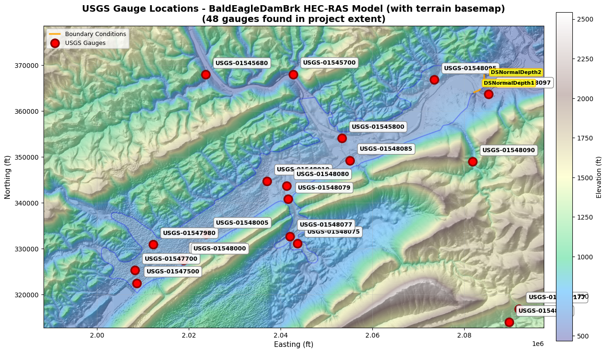

Example 910: USGS Gauge Catalog Generation¶
This notebook demonstrates how to generate and use a standardized USGS gauge data catalog for your HEC-RAS project.
Purpose¶
The gauge catalog generation function creates a standardized "USGS Gauge Data" folder (similar to the precipitation module's storm catalog) that: - Discovers all active USGS gauges within project extent - Downloads historical data for each gauge - Creates master catalog for easy gauge discovery - Provides standard location for engineering review and downstream functions
Key Functions¶
generate_gauge_catalog(): Create complete gauge catalog with metadata and dataload_gauge_catalog(): Load gauge catalog from standard locationload_gauge_data(): Load historical data for specific gaugeget_gauge_folder(): Get path to gauge folderupdate_gauge_catalog(): Refresh catalog with latest data
Example Project¶
We'll use the Bald Eagle Creek example project (Pennsylvania) which typically discovers multiple active USGS gauges including: - USGS-01547200: Bald Eagle Creek bl Spring Creek at Milesburg, PA (265 sq mi drainage) - USGS-01548005: Bald Eagle Creek near Beech Creek Station, PA (562 sq mi drainage)
The notebook dynamically discovers gauges within the project extent, so different projects will find different gauges.
Dependencies¶
Requires: pip install dataretrieval geopandas tqdm rasterio
LLM Forward Approach for Gauge Data¶
This notebook implements LLM Forward principles for external data integration:
- Data Provenance: All retrieved USGS data includes:
- Retrieval timestamp for audit trail
- USGS site metadata (drainage area, coordinates, period of record)
-
Data quality codes (USGS qualification flags)
-
Visual Verification: Every step produces reviewable outputs:
- GeoJSON spatial files (review in QGIS/ArcGIS)
- CSV time series data (plot in Excel/Python for visual QA)
-
Metadata JSON files (verify site characteristics)
-
Multiple Review Pathways:
- Traditional engineering review (verify gauge locations vs model domain)
- Visual inspection (plot gauges on HEC-RAS geometry)
-
Data quality review (check USGS qualification codes)
-
Self-Documenting: Standard folder structure creates permanent record
USGS Gauge Data/README.mddocuments catalog contents- Individual gauge folders preserve raw USGS data
- Master catalog enables quick gauge discovery
USGS Data Quality Standards¶
USGS Water Data Quality Codes (USGS NWIS documentation):
| Code | Meaning | Submittal Action |
|---|---|---|
| A | Approved for publication | Use directly (quality-assured) |
| P | Provisional data | Document in analysis, verify against other sources |
| e | Estimated value | Flag in model documentation, consider uncertainty |
| <, > | Less than/greater than value | Note detection limits in analysis |
Data Completeness Checks: - Identify gaps in time series (missing days/months) - Verify period of record overlaps model simulation period - Check for outliers or sensor malfunctions (spikes, flat lines)
When to Use Gauge Catalog¶
Model Boundary Conditions: - Generate upstream/lateral inflow hydrographs (see notebook 913) - Define downstream stage boundary conditions - Verify drainage area ratios for transposition
Model Calibration & Validation: - Compare simulated vs observed hydrographs (see notebook 914) - Calculate calibration metrics (NSE, PBIAS, R²) - Identify high-flow events for validation
Real-Time Monitoring: - Track current conditions during flood events (see notebook 912) - Compare real-time observations vs forecast runs - Issue tracking for model performance
1. Setup and Initialization¶
# =============================================================================
# DEVELOPMENT MODE TOGGLE
# =============================================================================
USE_LOCAL_SOURCE = True # <-- TOGGLE THIS
from pathlib import Path # Always import Path (needed throughout notebook)
if USE_LOCAL_SOURCE:
import sys
local_path = str(Path.cwd().parent)
if local_path not in sys.path:
sys.path.insert(0, local_path)
print(f"📁 LOCAL SOURCE MODE: Loading from {local_path}/ras_commander")
else:
print("📦 PIP PACKAGE MODE: Loading installed ras-commander")
# Import ras-commander
from ras_commander import init_ras_project, ras, RasExamples
from ras_commander.usgs import (
generate_gauge_catalog,
load_gauge_catalog,
load_gauge_data,
get_gauge_folder,
update_gauge_catalog
)
# Additional imports
import pandas as pd
import json
# Verify which version loaded
import ras_commander
print(f"✓ Loaded: {ras_commander.__file__}")
📁 LOCAL SOURCE MODE: Loading from c:\GH\ras-commander/ras_commander
✓ Loaded: c:\GH\ras-commander\ras_commander\__init__.py
# =============================================================================
# LOAD USGS API KEY (Optional but Recommended)
# =============================================================================
# USGS API key increases rate limits from 5 to 10 requests/sec
# Get a free key at: https://api.waterdata.usgs.gov/signup/
api_key_file = Path.cwd() / "usgs_api_key.txt"
usgs_api_key = None
if api_key_file.exists():
usgs_api_key = api_key_file.read_text().strip()
print(f"✓ Loaded USGS API key from: {api_key_file.name}")
print(f" Rate limit: 10 req/sec (with API key)")
else:
print(f"⚠️ API key file not found: {api_key_file}")
print(f" Rate limit: 5 req/sec (without API key)")
print(f" Get free key at: https://api.waterdata.usgs.gov/signup/")
✓ Loaded USGS API key from: usgs_api_key.txt
Rate limit: 10 req/sec (with API key)
Parameters¶
Configure these values to customize the notebook for your project.
# =============================================================================
# PARAMETERS - Edit these to customize the notebook
# =============================================================================
from pathlib import Path
# Project Configuration
PROJECT_NAME = "BaldEagleCrkMulti2D" # Example project to extract
RAS_VERSION = "6.6" # HEC-RAS version (6.3, 6.5, 6.6, etc.)
# USGS Configuration
USGS_SITE = "01547200" # USGS gauge site number
START_DATE = "2020-01-01" # Data start date
END_DATE = "2020-12-31" # Data end date
ONLINE = True # Enable network requests
print(f"Outputs will be saved to project folder after extraction.")
Outputs will be saved to project folder after extraction.
2. Extract Example Project¶
# Extract Bald Eagle Creek project
project_path = RasExamples.extract_project(PROJECT_NAME, suffix="910")
print(f"Project extracted to: {project_path}")
# Initialize project
init_ras_project(project_path, RAS_VERSION)
print(f"\nProject: {ras.project_name}")
print(f"Path: {ras.project_folder}")
print(f"\nProject initialized successfully")
2025-12-29 17:18:12 - ras_commander.RasExamples - INFO - Found zip file: C:\GH\ras-commander\examples\Example_Projects_6_6.zip
2025-12-29 17:18:12 - ras_commander.RasExamples - INFO - Loading project data from CSV...
2025-12-29 17:18:12 - ras_commander.RasExamples - INFO - Loaded 68 projects from CSV.
2025-12-29 17:18:12 - ras_commander.RasExamples - INFO - ----- RasExamples Extracting Project -----
2025-12-29 17:18:12 - ras_commander.RasExamples - INFO - Extracting project 'BaldEagleCrkMulti2D' as 'BaldEagleCrkMulti2D_910'
2025-12-29 17:18:12 - ras_commander.RasExamples - INFO - Folder 'BaldEagleCrkMulti2D_910' already exists. Deleting existing folder...
2025-12-29 17:18:12 - ras_commander.RasExamples - INFO - Existing folder 'BaldEagleCrkMulti2D_910' has been deleted.
2025-12-29 17:18:14 - ras_commander.RasExamples - INFO - Successfully extracted project 'BaldEagleCrkMulti2D' to C:\GH\ras-commander\examples\example_projects\BaldEagleCrkMulti2D_910
2025-12-29 17:18:15 - ras_commander.RasMap - INFO - Successfully parsed RASMapper file: C:\GH\ras-commander\examples\example_projects\BaldEagleCrkMulti2D_910\BaldEagleDamBrk.rasmap
Project extracted to: C:\GH\ras-commander\examples\example_projects\BaldEagleCrkMulti2D_910
Project: BaldEagleDamBrk
Path: C:\GH\ras-commander\examples\example_projects\BaldEagleCrkMulti2D_910
Project initialized successfully
3. Generate Gauge Catalog¶
This will: 1. Find all USGS gauges within 50% buffer of project extent 2. Download 10 years of historical data (flow and stage) 3. Create standardized folder structure 4. Generate master catalog and documentation
# Note: Bald Eagle Creek project doesn't have embedded CRS, so we specify it manually
# The project uses PA State Plane North (US feet) - EPSG:2271
# Set rate limit based on API key availability
rate_limit = 10.0 if usgs_api_key else 5.0
summary = generate_gauge_catalog(
buffer_percent=50.0, # Search within 50% buffer of project extent
include_historical=True, # Download historical data
historical_years=10, # Last 10 years of data
parameters=['flow', 'stage'], # Retrieve flow and stage data
project_crs="EPSG:2271", # PA State Plane North (US feet) - required for Bald Eagle
api_key=usgs_api_key, # Use API key from cell 4 (if available)
rate_limit_rps=rate_limit # 10 req/sec with key, 5 req/sec without
)
# Display summary
print("\n" + "="*60)
print("GAUGE CATALOG GENERATION SUMMARY")
print("="*60)
print(f"Gauges found: {summary['gauge_count']}")
print(f"Successfully processed: {summary['gauges_processed']}")
print(f"Failed: {summary['gauges_failed']}")
print(f"Output folder: {summary['output_folder']}")
print(f"Data size: {summary['data_size_mb']:.2f} MB")
print(f"Processing time: {summary['processing_time_sec']:.1f} seconds")
print("="*60)
2025-12-29 17:18:15 - ras_commander.usgs.catalog - INFO - Using provided API key for USGS requests
2025-12-29 17:18:15 - ras_commander.usgs.catalog - INFO - Generating USGS gauge catalog for project: C:\GH\ras-commander\examples\example_projects\BaldEagleCrkMulti2D_910
2025-12-29 17:18:15 - ras_commander.usgs.catalog - INFO - Output folder: C:\GH\ras-commander\examples\example_projects\BaldEagleCrkMulti2D_910\USGS Gauge Data
2025-12-29 17:18:15 - ras_commander.usgs.catalog - INFO - Buffer: 50.0%, Historical years: 10
2025-12-29 17:18:15 - ras_commander.usgs.catalog - INFO - Step 1/7: Finding gauges in project extent...
2025-12-29 17:18:15 - ras_commander.usgs.spatial - INFO - Retrieving project bounds from: C:\GH\ras-commander\examples\example_projects\BaldEagleCrkMulti2D_910\BaldEagleDamBrk.g06.hdf
2025-12-29 17:18:15 - ras_commander.hdf.HdfProject - INFO - Using existing Path object HDF file: C:\GH\ras-commander\examples\example_projects\BaldEagleCrkMulti2D_910\BaldEagleDamBrk.g06.hdf
2025-12-29 17:18:15 - ras_commander.hdf.HdfProject - INFO - Final validated file path: C:\GH\ras-commander\examples\example_projects\BaldEagleCrkMulti2D_910\BaldEagleDamBrk.g06.hdf
2025-12-29 17:18:15 - ras_commander.hdf.HdfProject - INFO - Using existing Path object HDF file: C:\GH\ras-commander\examples\example_projects\BaldEagleCrkMulti2D_910\BaldEagleDamBrk.g06.hdf
2025-12-29 17:18:15 - ras_commander.hdf.HdfProject - INFO - Final validated file path: C:\GH\ras-commander\examples\example_projects\BaldEagleCrkMulti2D_910\BaldEagleDamBrk.g06.hdf
2025-12-29 17:18:15 - ras_commander.hdf.HdfMesh - INFO - Using existing Path object HDF file: C:\GH\ras-commander\examples\example_projects\BaldEagleCrkMulti2D_910\BaldEagleDamBrk.g06.hdf
2025-12-29 17:18:15 - ras_commander.hdf.HdfMesh - INFO - Final validated file path: C:\GH\ras-commander\examples\example_projects\BaldEagleCrkMulti2D_910\BaldEagleDamBrk.g06.hdf
2025-12-29 17:18:15 - ras_commander.hdf.HdfMesh - INFO - Using existing Path object HDF file: C:\GH\ras-commander\examples\example_projects\BaldEagleCrkMulti2D_910\BaldEagleDamBrk.g06.hdf
2025-12-29 17:18:15 - ras_commander.hdf.HdfMesh - INFO - Final validated file path: C:\GH\ras-commander\examples\example_projects\BaldEagleCrkMulti2D_910\BaldEagleDamBrk.g06.hdf
2025-12-29 17:18:15 - ras_commander.hdf.HdfBase - INFO - Using HDF file from h5py.File object: C:\GH\ras-commander\examples\example_projects\BaldEagleCrkMulti2D_910\BaldEagleDamBrk.g06.hdf
2025-12-29 17:18:15 - ras_commander.hdf.HdfBase - INFO - Final validated file path: C:\GH\ras-commander\examples\example_projects\BaldEagleCrkMulti2D_910\BaldEagleDamBrk.g06.hdf
2025-12-29 17:18:15 - ras_commander.hdf.HdfBase - INFO - Found projection in RASMapper file: C:\GH\ras-commander\examples\example_projects\BaldEagleCrkMulti2D_910\Terrain\Projection.prj
2025-12-29 17:18:15 - ras_commander.hdf.HdfBase - INFO - Converted WKT to EPSG:2271 from RASMapper file Projection.prj
2025-12-29 17:18:15 - ras_commander.hdf.HdfProject - INFO - Found 3 2D flow areas
2025-12-29 17:18:15 - ras_commander.hdf.HdfProject - INFO - Found 192 cross sections
2025-12-29 17:18:15 - ras_commander.hdf.HdfXsec - INFO - Using existing Path object HDF file: C:\GH\ras-commander\examples\example_projects\BaldEagleCrkMulti2D_910\BaldEagleDamBrk.g06.hdf
2025-12-29 17:18:15 - ras_commander.hdf.HdfXsec - INFO - Final validated file path: C:\GH\ras-commander\examples\example_projects\BaldEagleCrkMulti2D_910\BaldEagleDamBrk.g06.hdf
2025-12-29 17:18:15 - ras_commander.hdf.HdfBase - INFO - Using existing Path object HDF file: C:\GH\ras-commander\examples\example_projects\BaldEagleCrkMulti2D_910\BaldEagleDamBrk.g06.hdf
2025-12-29 17:18:15 - ras_commander.hdf.HdfBase - INFO - Final validated file path: C:\GH\ras-commander\examples\example_projects\BaldEagleCrkMulti2D_910\BaldEagleDamBrk.g06.hdf
2025-12-29 17:18:15 - ras_commander.hdf.HdfBase - INFO - Using existing Path object HDF file: C:\GH\ras-commander\examples\example_projects\BaldEagleCrkMulti2D_910\BaldEagleDamBrk.g06.hdf
2025-12-29 17:18:15 - ras_commander.hdf.HdfBase - INFO - Final validated file path: C:\GH\ras-commander\examples\example_projects\BaldEagleCrkMulti2D_910\BaldEagleDamBrk.g06.hdf
2025-12-29 17:18:15 - ras_commander.hdf.HdfBase - INFO - Found projection in RASMapper file: C:\GH\ras-commander\examples\example_projects\BaldEagleCrkMulti2D_910\Terrain\Projection.prj
2025-12-29 17:18:15 - ras_commander.hdf.HdfBase - INFO - Converted WKT to EPSG:2271 from RASMapper file Projection.prj
2025-12-29 17:18:15 - ras_commander.hdf.HdfXsec - INFO - Extracted 1 river centerlines
2025-12-29 17:18:15 - ras_commander.hdf.HdfProject - INFO - Found 1 river centerlines
2025-12-29 17:18:15 - ras_commander.hdf.HdfProject - INFO - Original extent: (1966056.94, 289524.52, 2067365.40, 356568.61)
2025-12-29 17:18:15 - ras_commander.hdf.HdfProject - INFO - Buffered extent (50.0% x, 50.0% y): (1940729.82, 272763.50, 2092692.51, 373329.63)
2025-12-29 17:18:15 - ras_commander.hdf.HdfProject - INFO - WGS84 bounds: W=-77.850900, S=40.914414, E=-77.298763, N=41.191273
2025-12-29 17:18:15 - ras_commander.usgs.spatial - INFO - Querying USGS gauges in bounds: W=-77.850900, S=40.914414, E=-77.298763, N=41.191273
2025-12-29 17:18:15 - dataretrieval.waterdata.utils - INFO - Requesting: https://api.waterdata.usgs.gov/ogcapi/v0/collections/monitoring-locations/items?skipGeometry=False&limit=10000&bbox=-77.85090020585122%2C40.91441412100558%2C-77.2987626013432%2C41.1912731674398
2025-12-29 17:18:16 - dataretrieval.waterdata.utils - INFO - Remaining requests this hour: 999
2025-12-29 17:18:16 - ras_commander.usgs.spatial - INFO - Found 468 USGS gauges
2025-12-29 17:18:16 - ras_commander.usgs.spatial - INFO - Filtered out 420 non-ST sites (48 ST sites remaining)
2025-12-29 17:18:16 - ras_commander.usgs.catalog - INFO - Found 48 gauges in project extent
2025-12-29 17:18:16 - ras_commander.usgs.catalog - INFO - Rate limiting enabled: 10.0 requests/sec
Processing gauges: 0%| | 0/48 [00:00<?, ?it/s]2025-12-29 17:18:16 - ras_commander.usgs.catalog - INFO - Processing gauge 01545680: Getting metadata...
2025-12-29 17:18:16 - ras_commander.usgs.core - INFO - dataretrieval package loaded successfully
2025-12-29 17:18:16 - ras_commander.usgs.core - INFO - Retrieving metadata for site 01545680
2025-12-29 17:18:26 - ras_commander.usgs.core - INFO - Retrieved metadata for Tangascootack Creek near Lock Haven, PA (drainage area: 36.5 sq mi)
2025-12-29 17:18:26 - ras_commander.usgs.core - INFO - Checking flow data availability for site 01545680
2025-12-29 17:18:45 - ras_commander.usgs.core - ERROR - Error checking availability for site 01545680: HTTPSConnectionPool(host='nwis.waterservices.usgs.gov', port=443): Read timed out. (read timeout=None)
2025-12-29 17:18:45 - ras_commander.usgs.core - INFO - Checking stage data availability for site 01545680
2025-12-29 17:19:04 - ras_commander.usgs.core - ERROR - Error checking availability for site 01545680: HTTPSConnectionPool(host='nwis.waterservices.usgs.gov', port=443): Read timed out. (read timeout=None)
Processing gauges: 2%|▏ | 1/48 [00:48<37:49, 48.28s/it]2025-12-29 17:19:04 - ras_commander.usgs.catalog - INFO - Processing gauge 01545700: Getting metadata...
2025-12-29 17:19:04 - ras_commander.usgs.core - INFO - Retrieving metadata for site 01545700
2025-12-29 17:19:05 - ras_commander.usgs.core - INFO - Retrieved metadata for Queens Run near Lock Haven, PA (drainage area: 18.0 sq mi)
2025-12-29 17:19:05 - ras_commander.usgs.core - INFO - Checking flow data availability for site 01545700
2025-12-29 17:19:05 - ras_commander.usgs.core - WARNING - No flow data available for site 01545700 in specified period
2025-12-29 17:19:05 - ras_commander.usgs.core - INFO - Checking stage data availability for site 01545700
2025-12-29 17:19:05 - ras_commander.usgs.core - WARNING - No stage data available for site 01545700 in specified period
Processing gauges: 4%|▍ | 2/48 [00:49<15:40, 20.45s/it]2025-12-29 17:19:05 - ras_commander.usgs.catalog - INFO - Processing gauge 01545800: Getting metadata...
2025-12-29 17:19:05 - ras_commander.usgs.core - INFO - Retrieving metadata for site 01545800
2025-12-29 17:19:06 - ras_commander.usgs.core - INFO - Retrieved metadata for WB Susquehanna River at Lock Haven, PA (drainage area: 3345.0 sq mi)
2025-12-29 17:19:06 - ras_commander.usgs.core - INFO - Checking flow data availability for site 01545800
2025-12-29 17:19:06 - ras_commander.usgs.core - WARNING - No flow data available for site 01545800 in specified period
2025-12-29 17:19:06 - ras_commander.usgs.core - INFO - Checking stage data availability for site 01545800
2025-12-29 17:19:06 - ras_commander.usgs.core - WARNING - No stage data available for site 01545800 in specified period
Processing gauges: 6%|▋ | 3/48 [00:50<08:39, 11.55s/it]2025-12-29 17:19:06 - ras_commander.usgs.catalog - INFO - Processing gauge 01546000: Getting metadata...
2025-12-29 17:19:06 - ras_commander.usgs.core - INFO - Retrieving metadata for site 01546000
2025-12-29 17:19:07 - ras_commander.usgs.core - INFO - Retrieved metadata for North Bald Eagle Creek at Milesburg, PA (drainage area: 119.0 sq mi)
2025-12-29 17:19:07 - ras_commander.usgs.core - INFO - Checking flow data availability for site 01546000
2025-12-29 17:19:07 - ras_commander.usgs.core - WARNING - No flow data available for site 01546000 in specified period
2025-12-29 17:19:07 - ras_commander.usgs.core - INFO - Checking stage data availability for site 01546000
2025-12-29 17:19:07 - ras_commander.usgs.core - WARNING - No stage data available for site 01546000 in specified period
Processing gauges: 8%|▊ | 4/48 [00:51<05:23, 7.36s/it]2025-12-29 17:19:07 - ras_commander.usgs.catalog - INFO - Processing gauge 01546100: Getting metadata...
2025-12-29 17:19:07 - ras_commander.usgs.core - INFO - Retrieving metadata for site 01546100
2025-12-29 17:19:07 - ras_commander.usgs.core - INFO - Retrieved metadata for Bald Eagle Creek ab Spring Creek at Milesburg, PA (drainage area: None sq mi)
2025-12-29 17:19:07 - ras_commander.usgs.core - INFO - Checking flow data availability for site 01546100
2025-12-29 17:19:08 - ras_commander.usgs.core - WARNING - No flow data available for site 01546100 in specified period
2025-12-29 17:19:08 - ras_commander.usgs.core - INFO - Checking stage data availability for site 01546100
2025-12-29 17:19:08 - ras_commander.usgs.core - WARNING - No stage data available for site 01546100 in specified period
Processing gauges: 10%|█ | 5/48 [00:52<03:36, 5.04s/it]2025-12-29 17:19:08 - ras_commander.usgs.catalog - INFO - Processing gauge 01547000: Getting metadata...
2025-12-29 17:19:08 - ras_commander.usgs.core - INFO - Retrieving metadata for site 01547000
2025-12-29 17:19:08 - ras_commander.usgs.core - INFO - Retrieved metadata for Spring Creek near Bellefonte, PA (drainage area: 136.0 sq mi)
2025-12-29 17:19:08 - ras_commander.usgs.core - INFO - Checking flow data availability for site 01547000
2025-12-29 17:19:09 - ras_commander.usgs.core - WARNING - No flow data available for site 01547000 in specified period
2025-12-29 17:19:09 - ras_commander.usgs.core - INFO - Checking stage data availability for site 01547000
2025-12-29 17:19:10 - ras_commander.usgs.core - WARNING - No stage data available for site 01547000 in specified period
Processing gauges: 12%|█▎ | 6/48 [00:53<02:42, 3.87s/it]2025-12-29 17:19:10 - ras_commander.usgs.catalog - INFO - Processing gauge 01547100: Getting metadata...
2025-12-29 17:19:10 - ras_commander.usgs.core - INFO - Retrieving metadata for site 01547100
2025-12-29 17:19:10 - ras_commander.usgs.core - INFO - Retrieved metadata for Spring Creek at Milesburg, PA (drainage area: 142.0 sq mi)
2025-12-29 17:19:10 - ras_commander.usgs.core - INFO - Checking flow data availability for site 01547100
2025-12-29 17:19:11 - ras_commander.usgs.core - INFO - Flow data available for site 01547100
2025-12-29 17:19:11 - ras_commander.usgs.core - INFO - Retrieving flow data for site 01547100, 2016-01-01 17:19:10.945713 to 2025-12-29 17:19:10.945713
2025-12-29 17:19:27 - ras_commander.usgs.core - INFO - Retrieved 350793 flow records for site 01547100
2025-12-29 17:19:29 - ras_commander.usgs.core - INFO - Checking stage data availability for site 01547100
2025-12-29 17:19:29 - ras_commander.usgs.core - INFO - Stage data available for site 01547100
2025-12-29 17:19:29 - ras_commander.usgs.core - INFO - Retrieving stage data for site 01547100, 2016-01-01 17:19:29.304650 to 2025-12-29 17:19:29.304650
2025-12-29 17:19:44 - ras_commander.usgs.core - INFO - Retrieved 350947 stage records for site 01547100
Processing gauges: 15%|█▍ | 7/48 [01:29<09:50, 14.41s/it]2025-12-29 17:19:46 - ras_commander.usgs.catalog - INFO - Processing gauge 01547200: Getting metadata...
2025-12-29 17:19:46 - ras_commander.usgs.core - INFO - Retrieving metadata for site 01547200
2025-12-29 17:19:46 - ras_commander.usgs.core - INFO - Retrieved metadata for Bald Eagle Creek bl Spring Creek at Milesburg, PA (drainage area: 265.0 sq mi)
2025-12-29 17:19:46 - ras_commander.usgs.core - INFO - Checking flow data availability for site 01547200
2025-12-29 17:19:47 - ras_commander.usgs.core - INFO - Flow data available for site 01547200
2025-12-29 17:19:47 - ras_commander.usgs.core - INFO - Retrieving flow data for site 01547200, 2016-01-01 17:19:46.634022 to 2025-12-29 17:19:46.634022
2025-12-29 17:20:02 - ras_commander.usgs.core - INFO - Retrieved 348729 flow records for site 01547200
2025-12-29 17:20:03 - ras_commander.usgs.core - INFO - Checking stage data availability for site 01547200
2025-12-29 17:20:04 - ras_commander.usgs.core - INFO - Stage data available for site 01547200
2025-12-29 17:20:04 - ras_commander.usgs.core - INFO - Retrieving stage data for site 01547200, 2016-01-01 17:20:03.872983 to 2025-12-29 17:20:03.872983
2025-12-29 17:20:20 - ras_commander.usgs.core - INFO - Retrieved 351046 stage records for site 01547200
Processing gauges: 17%|█▋ | 8/48 [02:05<14:06, 21.17s/it]2025-12-29 17:20:22 - ras_commander.usgs.catalog - INFO - Processing gauge 01547280: Getting metadata...
2025-12-29 17:20:22 - ras_commander.usgs.core - INFO - Retrieving metadata for site 01547280
2025-12-29 17:20:22 - ras_commander.usgs.core - INFO - Retrieved metadata for Antis Run near Milesburg, PA (drainage area: 1.56 sq mi)
2025-12-29 17:20:22 - ras_commander.usgs.core - INFO - Checking flow data availability for site 01547280
2025-12-29 17:20:22 - ras_commander.usgs.core - WARNING - No flow data available for site 01547280 in specified period
2025-12-29 17:20:22 - ras_commander.usgs.core - INFO - Checking stage data availability for site 01547280
2025-12-29 17:20:22 - ras_commander.usgs.core - WARNING - No stage data available for site 01547280 in specified period
Processing gauges: 19%|█▉ | 9/48 [02:06<09:35, 14.77s/it]2025-12-29 17:20:22 - ras_commander.usgs.catalog - INFO - Processing gauge 01547300: Getting metadata...
2025-12-29 17:20:22 - ras_commander.usgs.core - INFO - Retrieving metadata for site 01547300
2025-12-29 17:20:22 - ras_commander.usgs.core - INFO - Retrieved metadata for Nittany Creek at Curtin, PA (drainage area: 16.9 sq mi)
2025-12-29 17:20:22 - ras_commander.usgs.core - INFO - Checking flow data availability for site 01547300
2025-12-29 17:20:23 - ras_commander.usgs.core - WARNING - No flow data available for site 01547300 in specified period
2025-12-29 17:20:23 - ras_commander.usgs.core - INFO - Checking stage data availability for site 01547300
2025-12-29 17:20:23 - ras_commander.usgs.core - WARNING - No stage data available for site 01547300 in specified period
Processing gauges: 21%|██ | 10/48 [02:06<06:35, 10.40s/it]2025-12-29 17:20:23 - ras_commander.usgs.catalog - INFO - Processing gauge 01547400: Getting metadata...
2025-12-29 17:20:23 - ras_commander.usgs.core - INFO - Retrieving metadata for site 01547400
2025-12-29 17:20:23 - ras_commander.usgs.core - INFO - Retrieved metadata for Bald Eagle Creek near Milesburg, PA (drainage area: 296.0 sq mi)
2025-12-29 17:20:23 - ras_commander.usgs.core - INFO - Checking flow data availability for site 01547400
2025-12-29 17:20:23 - ras_commander.usgs.core - WARNING - No flow data available for site 01547400 in specified period
2025-12-29 17:20:23 - ras_commander.usgs.core - INFO - Checking stage data availability for site 01547400
2025-12-29 17:20:23 - ras_commander.usgs.core - WARNING - No stage data available for site 01547400 in specified period
Processing gauges: 23%|██▎ | 11/48 [02:07<04:33, 7.40s/it]2025-12-29 17:20:23 - ras_commander.usgs.catalog - INFO - Processing gauge 01547450: Getting metadata...
2025-12-29 17:20:23 - ras_commander.usgs.core - INFO - Retrieving metadata for site 01547450
2025-12-29 17:20:24 - ras_commander.usgs.core - INFO - Retrieved metadata for Bald Eagle Creek at Howard, PA (drainage area: 321.0 sq mi)
2025-12-29 17:20:24 - ras_commander.usgs.core - INFO - Checking flow data availability for site 01547450
2025-12-29 17:20:24 - ras_commander.usgs.core - WARNING - No flow data available for site 01547450 in specified period
2025-12-29 17:20:24 - ras_commander.usgs.core - INFO - Checking stage data availability for site 01547450
2025-12-29 17:20:25 - ras_commander.usgs.core - WARNING - No stage data available for site 01547450 in specified period
Processing gauges: 25%|██▌ | 12/48 [02:08<03:20, 5.56s/it]2025-12-29 17:20:25 - ras_commander.usgs.catalog - INFO - Processing gauge 01547500: Getting metadata...
2025-12-29 17:20:25 - ras_commander.usgs.core - INFO - Retrieving metadata for site 01547500
2025-12-29 17:20:26 - ras_commander.usgs.core - INFO - Retrieved metadata for Bald Eagle Creek at Blanchard, PA (drainage area: 339.0 sq mi)
2025-12-29 17:20:26 - ras_commander.usgs.core - INFO - Checking flow data availability for site 01547500
2025-12-29 17:20:26 - ras_commander.usgs.core - INFO - Flow data available for site 01547500
2025-12-29 17:20:26 - ras_commander.usgs.core - INFO - Retrieving flow data for site 01547500, 2016-01-01 17:20:26.080512 to 2025-12-29 17:20:26.080512
2025-12-29 17:20:39 - ras_commander.usgs.core - INFO - Retrieved 350274 flow records for site 01547500
2025-12-29 17:20:41 - ras_commander.usgs.core - INFO - Checking stage data availability for site 01547500
2025-12-29 17:20:41 - ras_commander.usgs.core - INFO - Stage data available for site 01547500
2025-12-29 17:20:41 - ras_commander.usgs.core - INFO - Retrieving stage data for site 01547500, 2016-01-01 17:20:41.655782 to 2025-12-29 17:20:41.655782
2025-12-29 17:20:56 - ras_commander.usgs.core - INFO - Retrieved 350272 stage records for site 01547500
Processing gauges: 27%|██▋ | 13/48 [02:41<08:04, 13.84s/it]2025-12-29 17:20:58 - ras_commander.usgs.catalog - INFO - Processing gauge 01547600: Getting metadata...
2025-12-29 17:20:58 - ras_commander.usgs.core - INFO - Retrieving metadata for site 01547600
2025-12-29 17:20:58 - ras_commander.usgs.core - INFO - Retrieved metadata for Romola Branch near Howard, PA (drainage area: 5.05 sq mi)
2025-12-29 17:20:58 - ras_commander.usgs.core - INFO - Checking flow data availability for site 01547600
2025-12-29 17:20:58 - ras_commander.usgs.core - WARNING - No flow data available for site 01547600 in specified period
2025-12-29 17:20:58 - ras_commander.usgs.core - INFO - Checking stage data availability for site 01547600
2025-12-29 17:20:58 - ras_commander.usgs.core - WARNING - No stage data available for site 01547600 in specified period
Processing gauges: 29%|██▉ | 14/48 [02:42<05:34, 9.83s/it]2025-12-29 17:20:58 - ras_commander.usgs.catalog - INFO - Processing gauge 01547700: Getting metadata...
2025-12-29 17:20:58 - ras_commander.usgs.core - INFO - Retrieving metadata for site 01547700
2025-12-29 17:20:58 - ras_commander.usgs.core - INFO - Retrieved metadata for Marsh Creek at Blanchard, PA (drainage area: 44.1 sq mi)
2025-12-29 17:20:58 - ras_commander.usgs.core - INFO - Checking flow data availability for site 01547700
2025-12-29 17:20:59 - ras_commander.usgs.core - INFO - Flow data available for site 01547700
2025-12-29 17:20:59 - ras_commander.usgs.core - INFO - Retrieving flow data for site 01547700, 2016-01-01 17:20:58.858986 to 2025-12-29 17:20:58.858986
2025-12-29 17:21:15 - ras_commander.usgs.core - INFO - Retrieved 345383 flow records for site 01547700
2025-12-29 17:21:16 - ras_commander.usgs.core - INFO - Checking stage data availability for site 01547700
2025-12-29 17:21:17 - ras_commander.usgs.core - INFO - Stage data available for site 01547700
2025-12-29 17:21:17 - ras_commander.usgs.core - INFO - Retrieving stage data for site 01547700, 2016-01-01 17:21:16.878023 to 2025-12-29 17:21:16.878023
2025-12-29 17:21:32 - ras_commander.usgs.core - INFO - Retrieved 351567 stage records for site 01547700
Processing gauges: 31%|███▏ | 15/48 [03:17<09:42, 17.66s/it]2025-12-29 17:21:34 - ras_commander.usgs.catalog - INFO - Processing gauge 01547900: Getting metadata...
2025-12-29 17:21:34 - ras_commander.usgs.core - INFO - Retrieving metadata for site 01547900
2025-12-29 17:21:34 - ras_commander.usgs.core - INFO - Retrieved metadata for Big Run at Orviston, PA (drainage area: 34.2 sq mi)
2025-12-29 17:21:34 - ras_commander.usgs.core - INFO - Checking flow data availability for site 01547900
2025-12-29 17:21:34 - ras_commander.usgs.core - WARNING - No flow data available for site 01547900 in specified period
2025-12-29 17:21:34 - ras_commander.usgs.core - INFO - Checking stage data availability for site 01547900
2025-12-29 17:21:35 - ras_commander.usgs.core - WARNING - No stage data available for site 01547900 in specified period
Processing gauges: 33%|███▎ | 16/48 [03:18<06:40, 12.52s/it]2025-12-29 17:21:35 - ras_commander.usgs.catalog - INFO - Processing gauge 01547950: Getting metadata...
2025-12-29 17:21:35 - ras_commander.usgs.core - INFO - Retrieving metadata for site 01547950
2025-12-29 17:21:35 - ras_commander.usgs.core - INFO - Retrieved metadata for Beech Creek at Monument, PA (drainage area: 152.0 sq mi)
2025-12-29 17:21:35 - ras_commander.usgs.core - INFO - Checking flow data availability for site 01547950
2025-12-29 17:21:35 - ras_commander.usgs.core - INFO - Flow data available for site 01547950
2025-12-29 17:21:35 - ras_commander.usgs.core - INFO - Retrieving flow data for site 01547950, 2016-01-01 17:21:35.232915 to 2025-12-29 17:21:35.232915
2025-12-29 17:21:51 - ras_commander.usgs.core - INFO - Retrieved 350761 flow records for site 01547950
2025-12-29 17:21:53 - ras_commander.usgs.core - INFO - Checking stage data availability for site 01547950
2025-12-29 17:21:53 - ras_commander.usgs.core - INFO - Stage data available for site 01547950
2025-12-29 17:21:53 - ras_commander.usgs.core - INFO - Retrieving stage data for site 01547950, 2016-01-01 17:21:53.002683 to 2025-12-29 17:21:53.002683
2025-12-29 17:22:08 - ras_commander.usgs.core - INFO - Retrieved 358149 stage records for site 01547950
Processing gauges: 35%|███▌ | 17/48 [03:54<10:03, 19.47s/it]2025-12-29 17:22:10 - ras_commander.usgs.catalog - INFO - Processing gauge 01547980: Getting metadata...
2025-12-29 17:22:10 - ras_commander.usgs.core - INFO - Retrieving metadata for site 01547980
2025-12-29 17:22:11 - ras_commander.usgs.core - INFO - Retrieved metadata for Beech Creek at Beech Creek, PA (drainage area: 170.0 sq mi)
2025-12-29 17:22:11 - ras_commander.usgs.core - INFO - Checking flow data availability for site 01547980
2025-12-29 17:22:11 - ras_commander.usgs.core - WARNING - No flow data available for site 01547980 in specified period
2025-12-29 17:22:11 - ras_commander.usgs.core - INFO - Checking stage data availability for site 01547980
2025-12-29 17:22:11 - ras_commander.usgs.core - WARNING - No stage data available for site 01547980 in specified period
Processing gauges: 38%|███▊ | 18/48 [03:54<06:55, 13.85s/it]2025-12-29 17:22:11 - ras_commander.usgs.catalog - INFO - Processing gauge 01547990: Getting metadata...
2025-12-29 17:22:11 - ras_commander.usgs.core - INFO - Retrieving metadata for site 01547990
2025-12-29 17:22:11 - ras_commander.usgs.core - INFO - Retrieved metadata for Beech Creek near Beech Creek, PA (drainage area: 172.0 sq mi)
2025-12-29 17:22:11 - ras_commander.usgs.core - INFO - Checking flow data availability for site 01547990
2025-12-29 17:22:12 - ras_commander.usgs.core - WARNING - No flow data available for site 01547990 in specified period
2025-12-29 17:22:12 - ras_commander.usgs.core - INFO - Checking stage data availability for site 01547990
2025-12-29 17:22:12 - ras_commander.usgs.core - WARNING - No stage data available for site 01547990 in specified period
Processing gauges: 40%|███▉ | 19/48 [03:55<04:47, 9.91s/it]2025-12-29 17:22:12 - ras_commander.usgs.catalog - INFO - Processing gauge 01548000: Getting metadata...
2025-12-29 17:22:12 - ras_commander.usgs.core - INFO - Retrieving metadata for site 01548000
2025-12-29 17:22:12 - ras_commander.usgs.core - INFO - Retrieved metadata for Bald Eagle Creek at Beech Creek Station, PA (drainage area: 559.0 sq mi)
2025-12-29 17:22:12 - ras_commander.usgs.core - INFO - Checking flow data availability for site 01548000
2025-12-29 17:22:12 - ras_commander.usgs.core - WARNING - No flow data available for site 01548000 in specified period
2025-12-29 17:22:12 - ras_commander.usgs.core - INFO - Checking stage data availability for site 01548000
2025-12-29 17:22:13 - ras_commander.usgs.core - WARNING - No stage data available for site 01548000 in specified period
Processing gauges: 42%|████▏ | 20/48 [03:56<03:20, 7.16s/it]2025-12-29 17:22:13 - ras_commander.usgs.catalog - INFO - Processing gauge 01548005: Getting metadata...
2025-12-29 17:22:13 - ras_commander.usgs.core - INFO - Retrieving metadata for site 01548005
2025-12-29 17:22:13 - ras_commander.usgs.core - INFO - Retrieved metadata for Bald Eagle Creek near Beech Creek Station, PA (drainage area: 562.0 sq mi)
2025-12-29 17:22:13 - ras_commander.usgs.core - INFO - Checking flow data availability for site 01548005
2025-12-29 17:22:13 - ras_commander.usgs.core - WARNING - No flow data available for site 01548005 in specified period
2025-12-29 17:22:13 - ras_commander.usgs.core - INFO - Checking stage data availability for site 01548005
2025-12-29 17:22:14 - ras_commander.usgs.core - WARNING - No stage data available for site 01548005 in specified period
Processing gauges: 44%|████▍ | 21/48 [03:57<02:23, 5.32s/it]2025-12-29 17:22:14 - ras_commander.usgs.catalog - INFO - Processing gauge 01548010: Getting metadata...
2025-12-29 17:22:14 - ras_commander.usgs.core - INFO - Retrieving metadata for site 01548010
2025-12-29 17:22:14 - ras_commander.usgs.core - INFO - Retrieved metadata for Bald Eagle Creek near Mill Hall, PA (drainage area: None sq mi)
2025-12-29 17:22:14 - ras_commander.usgs.core - INFO - Checking flow data availability for site 01548010
2025-12-29 17:22:15 - ras_commander.usgs.core - WARNING - No flow data available for site 01548010 in specified period
2025-12-29 17:22:15 - ras_commander.usgs.core - INFO - Checking stage data availability for site 01548010
2025-12-29 17:22:16 - ras_commander.usgs.core - WARNING - No stage data available for site 01548010 in specified period
Processing gauges: 46%|████▌ | 22/48 [03:59<01:52, 4.33s/it]2025-12-29 17:22:16 - ras_commander.usgs.catalog - INFO - Processing gauge 015480177: Getting metadata...
2025-12-29 17:22:16 - ras_commander.usgs.core - INFO - Retrieving metadata for site 015480177
2025-12-29 17:22:16 - ras_commander.usgs.core - INFO - Retrieved metadata for Mill Creek at Loganton, PA (drainage area: 2.95 sq mi)
2025-12-29 17:22:16 - ras_commander.usgs.core - INFO - Checking flow data availability for site 015480177
2025-12-29 17:22:17 - ras_commander.usgs.core - WARNING - No flow data available for site 015480177 in specified period
2025-12-29 17:22:17 - ras_commander.usgs.core - INFO - Checking stage data availability for site 015480177
2025-12-29 17:22:18 - ras_commander.usgs.core - WARNING - No stage data available for site 015480177 in specified period
Processing gauges: 48%|████▊ | 23/48 [04:01<01:30, 3.63s/it]2025-12-29 17:22:18 - ras_commander.usgs.catalog - INFO - Processing gauge 01548018: Getting metadata...
2025-12-29 17:22:18 - ras_commander.usgs.core - INFO - Retrieving metadata for site 01548018
2025-12-29 17:22:18 - ras_commander.usgs.core - INFO - Retrieved metadata for Fishing CReek at Loganton, PA (drainage area: 29.7 sq mi)
2025-12-29 17:22:18 - ras_commander.usgs.core - INFO - Checking flow data availability for site 01548018
2025-12-29 17:22:19 - ras_commander.usgs.core - WARNING - No flow data available for site 01548018 in specified period
2025-12-29 17:22:19 - ras_commander.usgs.core - INFO - Checking stage data availability for site 01548018
2025-12-29 17:22:20 - ras_commander.usgs.core - WARNING - No stage data available for site 01548018 in specified period
Processing gauges: 50%|█████ | 24/48 [04:03<01:15, 3.13s/it]2025-12-29 17:22:20 - ras_commander.usgs.catalog - INFO - Processing gauge 01548020: Getting metadata...
2025-12-29 17:22:20 - ras_commander.usgs.core - INFO - Retrieving metadata for site 01548020
2025-12-29 17:22:20 - ras_commander.usgs.core - INFO - Retrieved metadata for Bull Run near Loganton, PA (drainage area: 1.99 sq mi)
2025-12-29 17:22:20 - ras_commander.usgs.core - INFO - Checking flow data availability for site 01548020
2025-12-29 17:22:21 - ras_commander.usgs.core - WARNING - No flow data available for site 01548020 in specified period
2025-12-29 17:22:21 - ras_commander.usgs.core - INFO - Checking stage data availability for site 01548020
2025-12-29 17:22:22 - ras_commander.usgs.core - WARNING - No stage data available for site 01548020 in specified period
Processing gauges: 52%|█████▏ | 25/48 [04:05<01:04, 2.80s/it]2025-12-29 17:22:22 - ras_commander.usgs.catalog - INFO - Processing gauge 015480202: Getting metadata...
2025-12-29 17:22:22 - ras_commander.usgs.core - INFO - Retrieving metadata for site 015480202
2025-12-29 17:22:22 - ras_commander.usgs.core - INFO - Retrieved metadata for Bull Run at Winter Road near Loganton, PA (drainage area: 2.02 sq mi)
2025-12-29 17:22:22 - ras_commander.usgs.core - INFO - Checking flow data availability for site 015480202
2025-12-29 17:22:23 - ras_commander.usgs.core - WARNING - No flow data available for site 015480202 in specified period
2025-12-29 17:22:23 - ras_commander.usgs.core - INFO - Checking stage data availability for site 015480202
2025-12-29 17:22:24 - ras_commander.usgs.core - WARNING - No stage data available for site 015480202 in specified period
Processing gauges: 54%|█████▍ | 26/48 [04:07<00:56, 2.56s/it]2025-12-29 17:22:24 - ras_commander.usgs.catalog - INFO - Processing gauge 01548021: Getting metadata...
2025-12-29 17:22:24 - ras_commander.usgs.core - INFO - Retrieving metadata for site 01548021
2025-12-29 17:22:24 - ras_commander.usgs.core - INFO - Retrieved metadata for Unnamed trib (Greenburr Gap Run)nr Logan Mills,PA (drainage area: 0.89 sq mi)
2025-12-29 17:22:24 - ras_commander.usgs.core - INFO - Checking flow data availability for site 01548021
2025-12-29 17:22:25 - ras_commander.usgs.core - WARNING - No flow data available for site 01548021 in specified period
2025-12-29 17:22:25 - ras_commander.usgs.core - INFO - Checking stage data availability for site 01548021
2025-12-29 17:22:26 - ras_commander.usgs.core - WARNING - No stage data available for site 01548021 in specified period
Processing gauges: 56%|█████▋ | 27/48 [04:09<00:50, 2.39s/it]2025-12-29 17:22:26 - ras_commander.usgs.catalog - INFO - Processing gauge 01548022: Getting metadata...
2025-12-29 17:22:26 - ras_commander.usgs.core - INFO - Retrieving metadata for site 01548022
2025-12-29 17:22:26 - ras_commander.usgs.core - INFO - Retrieved metadata for Fishing Creek at Logan Mills, PA (drainage area: 41.3 sq mi)
2025-12-29 17:22:26 - ras_commander.usgs.core - INFO - Checking flow data availability for site 01548022
2025-12-29 17:22:27 - ras_commander.usgs.core - WARNING - No flow data available for site 01548022 in specified period
2025-12-29 17:22:27 - ras_commander.usgs.core - INFO - Checking stage data availability for site 01548022
2025-12-29 17:22:28 - ras_commander.usgs.core - WARNING - No stage data available for site 01548022 in specified period
Processing gauges: 58%|█████▊ | 28/48 [04:11<00:45, 2.27s/it]2025-12-29 17:22:28 - ras_commander.usgs.catalog - INFO - Processing gauge 015480225: Getting metadata...
2025-12-29 17:22:28 - ras_commander.usgs.core - INFO - Retrieving metadata for site 015480225
2025-12-29 17:22:28 - ras_commander.usgs.core - INFO - Retrieved metadata for Unnamed trib (Wolf Gap Run) at Logan Mills, PA (drainage area: 1.57 sq mi)
2025-12-29 17:22:28 - ras_commander.usgs.core - INFO - Checking flow data availability for site 015480225
2025-12-29 17:22:29 - ras_commander.usgs.core - WARNING - No flow data available for site 015480225 in specified period
2025-12-29 17:22:29 - ras_commander.usgs.core - INFO - Checking stage data availability for site 015480225
2025-12-29 17:22:30 - ras_commander.usgs.core - WARNING - No stage data available for site 015480225 in specified period
Processing gauges: 60%|██████ | 29/48 [04:13<00:41, 2.19s/it]2025-12-29 17:22:30 - ras_commander.usgs.catalog - INFO - Processing gauge 01548023: Getting metadata...
2025-12-29 17:22:30 - ras_commander.usgs.core - INFO - Retrieving metadata for site 01548023
2025-12-29 17:22:30 - ras_commander.usgs.core - INFO - Retrieved metadata for Unnamed tr (Schreckengast Gp Rn) nr Logan Mills,PA (drainage area: 0.98 sq mi)
2025-12-29 17:22:30 - ras_commander.usgs.core - INFO - Checking flow data availability for site 01548023
2025-12-29 17:22:31 - ras_commander.usgs.core - WARNING - No flow data available for site 01548023 in specified period
2025-12-29 17:22:31 - ras_commander.usgs.core - INFO - Checking stage data availability for site 01548023
2025-12-29 17:22:32 - ras_commander.usgs.core - WARNING - No stage data available for site 01548023 in specified period
Processing gauges: 62%|██████▎ | 30/48 [04:15<00:38, 2.13s/it]2025-12-29 17:22:32 - ras_commander.usgs.catalog - INFO - Processing gauge 01548024: Getting metadata...
2025-12-29 17:22:32 - ras_commander.usgs.core - INFO - Retrieving metadata for site 01548024
2025-12-29 17:22:32 - ras_commander.usgs.core - INFO - Retrieved metadata for Fishing Creek at Tylersville, PA (drainage area: 47.1 sq mi)
2025-12-29 17:22:32 - ras_commander.usgs.core - INFO - Checking flow data availability for site 01548024
2025-12-29 17:22:33 - ras_commander.usgs.core - WARNING - No flow data available for site 01548024 in specified period
2025-12-29 17:22:33 - ras_commander.usgs.core - INFO - Checking stage data availability for site 01548024
2025-12-29 17:22:34 - ras_commander.usgs.core - WARNING - No stage data available for site 01548024 in specified period
Processing gauges: 65%|██████▍ | 31/48 [04:17<00:35, 2.09s/it]2025-12-29 17:22:34 - ras_commander.usgs.catalog - INFO - Processing gauge 01548025: Getting metadata...
2025-12-29 17:22:34 - ras_commander.usgs.core - INFO - Retrieving metadata for site 01548025
2025-12-29 17:22:34 - ras_commander.usgs.core - INFO - Retrieved metadata for Unnamed trib ( Bletz Hollow) near Tylersville, PA (drainage area: 3.11 sq mi)
2025-12-29 17:22:34 - ras_commander.usgs.core - INFO - Checking flow data availability for site 01548025
2025-12-29 17:22:35 - ras_commander.usgs.core - WARNING - No flow data available for site 01548025 in specified period
2025-12-29 17:22:35 - ras_commander.usgs.core - INFO - Checking stage data availability for site 01548025
2025-12-29 17:22:36 - ras_commander.usgs.core - WARNING - No stage data available for site 01548025 in specified period
Processing gauges: 67%|██████▋ | 32/48 [04:19<00:33, 2.07s/it]2025-12-29 17:22:36 - ras_commander.usgs.catalog - INFO - Processing gauge 01548029: Getting metadata...
2025-12-29 17:22:36 - ras_commander.usgs.core - INFO - Retrieving metadata for site 01548029
2025-12-29 17:22:36 - ras_commander.usgs.core - INFO - Retrieved metadata for Unnamed trib (Conway Gap) near Lamar, PA (drainage area: 1.35 sq mi)
2025-12-29 17:22:36 - ras_commander.usgs.core - INFO - Checking flow data availability for site 01548029
2025-12-29 17:22:37 - ras_commander.usgs.core - WARNING - No flow data available for site 01548029 in specified period
2025-12-29 17:22:37 - ras_commander.usgs.core - INFO - Checking stage data availability for site 01548029
2025-12-29 17:22:38 - ras_commander.usgs.core - WARNING - No stage data available for site 01548029 in specified period
Processing gauges: 69%|██████▉ | 33/48 [04:21<00:30, 2.05s/it]2025-12-29 17:22:38 - ras_commander.usgs.catalog - INFO - Processing gauge 01548030: Getting metadata...
2025-12-29 17:22:38 - ras_commander.usgs.core - INFO - Retrieving metadata for site 01548030
2025-12-29 17:22:38 - ras_commander.usgs.core - INFO - Retrieved metadata for Fishing Creek near Lamar, PA (drainage area: 55.8 sq mi)
2025-12-29 17:22:38 - ras_commander.usgs.core - INFO - Checking flow data availability for site 01548030
2025-12-29 17:22:39 - ras_commander.usgs.core - WARNING - No flow data available for site 01548030 in specified period
2025-12-29 17:22:39 - ras_commander.usgs.core - INFO - Checking stage data availability for site 01548030
2025-12-29 17:22:40 - ras_commander.usgs.core - WARNING - No stage data available for site 01548030 in specified period
Processing gauges: 71%|███████ | 34/48 [04:23<00:28, 2.03s/it]2025-12-29 17:22:40 - ras_commander.usgs.catalog - INFO - Processing gauge 01548031: Getting metadata...
2025-12-29 17:22:40 - ras_commander.usgs.core - INFO - Retrieving metadata for site 01548031
2025-12-29 17:22:40 - ras_commander.usgs.core - INFO - Retrieved metadata for Unnamed trib (Little Kettle Cr) near Lamar, PA (drainage area: 0.35 sq mi)
2025-12-29 17:22:40 - ras_commander.usgs.core - INFO - Checking flow data availability for site 01548031
2025-12-29 17:22:41 - ras_commander.usgs.core - WARNING - No flow data available for site 01548031 in specified period
2025-12-29 17:22:41 - ras_commander.usgs.core - INFO - Checking stage data availability for site 01548031
2025-12-29 17:22:42 - ras_commander.usgs.core - WARNING - No stage data available for site 01548031 in specified period
Processing gauges: 73%|███████▎ | 35/48 [04:25<00:26, 2.02s/it]2025-12-29 17:22:42 - ras_commander.usgs.catalog - INFO - Processing gauge 01548032: Getting metadata...
2025-12-29 17:22:42 - ras_commander.usgs.core - INFO - Retrieving metadata for site 01548032
2025-12-29 17:22:42 - ras_commander.usgs.core - INFO - Retrieved metadata for Unnamed Trib (Big Kettle Run) near Tylersville, PA (drainage area: 1.89 sq mi)
2025-12-29 17:22:42 - ras_commander.usgs.core - INFO - Checking flow data availability for site 01548032
2025-12-29 17:22:43 - ras_commander.usgs.core - WARNING - No flow data available for site 01548032 in specified period
2025-12-29 17:22:43 - ras_commander.usgs.core - INFO - Checking stage data availability for site 01548032
2025-12-29 17:22:44 - ras_commander.usgs.core - WARNING - No stage data available for site 01548032 in specified period
Processing gauges: 75%|███████▌ | 36/48 [04:27<00:24, 2.02s/it]2025-12-29 17:22:44 - ras_commander.usgs.catalog - INFO - Processing gauge 01548038: Getting metadata...
2025-12-29 17:22:44 - ras_commander.usgs.core - INFO - Retrieving metadata for site 01548038
2025-12-29 17:22:44 - ras_commander.usgs.core - INFO - Retrieved metadata for Fishing Creek near Nittany, PA (drainage area: 72.02 sq mi)
2025-12-29 17:22:44 - ras_commander.usgs.core - INFO - Checking flow data availability for site 01548038
2025-12-29 17:22:45 - ras_commander.usgs.core - WARNING - No flow data available for site 01548038 in specified period
2025-12-29 17:22:45 - ras_commander.usgs.core - INFO - Checking stage data availability for site 01548038
2025-12-29 17:22:46 - ras_commander.usgs.core - WARNING - No stage data available for site 01548038 in specified period
Processing gauges: 77%|███████▋ | 37/48 [04:29<00:22, 2.01s/it]2025-12-29 17:22:46 - ras_commander.usgs.catalog - INFO - Processing gauge 01548050: Getting metadata...
2025-12-29 17:22:46 - ras_commander.usgs.core - INFO - Retrieving metadata for site 01548050
2025-12-29 17:22:46 - ras_commander.usgs.core - INFO - Retrieved metadata for Little Fishing Creek near Hublersburg, PA (drainage area: 25.0 sq mi)
2025-12-29 17:22:46 - ras_commander.usgs.core - INFO - Checking flow data availability for site 01548050
2025-12-29 17:22:47 - ras_commander.usgs.core - WARNING - No flow data available for site 01548050 in specified period
2025-12-29 17:22:47 - ras_commander.usgs.core - INFO - Checking stage data availability for site 01548050
2025-12-29 17:22:48 - ras_commander.usgs.core - WARNING - No stage data available for site 01548050 in specified period
Processing gauges: 79%|███████▉ | 38/48 [04:31<00:20, 2.01s/it]2025-12-29 17:22:48 - ras_commander.usgs.catalog - INFO - Processing gauge 01548075: Getting metadata...
2025-12-29 17:22:48 - ras_commander.usgs.core - INFO - Retrieving metadata for site 01548075
2025-12-29 17:22:48 - ras_commander.usgs.core - INFO - Retrieved metadata for Fishing Creek near Cedar Springs, PA (drainage area: 137.0 sq mi)
2025-12-29 17:22:48 - ras_commander.usgs.core - INFO - Checking flow data availability for site 01548075
2025-12-29 17:22:49 - ras_commander.usgs.core - WARNING - No flow data available for site 01548075 in specified period
2025-12-29 17:22:49 - ras_commander.usgs.core - INFO - Checking stage data availability for site 01548075
2025-12-29 17:22:50 - ras_commander.usgs.core - WARNING - No stage data available for site 01548075 in specified period
Processing gauges: 81%|████████▏ | 39/48 [04:33<00:18, 2.00s/it]2025-12-29 17:22:50 - ras_commander.usgs.catalog - INFO - Processing gauge 01548077: Getting metadata...
2025-12-29 17:22:50 - ras_commander.usgs.core - INFO - Retrieving metadata for site 01548077
2025-12-29 17:22:50 - ras_commander.usgs.core - INFO - Retrieved metadata for Cedar Run at Cedar Springs near Mill Hall, PA (drainage area: 14.8 sq mi)
2025-12-29 17:22:50 - ras_commander.usgs.core - INFO - Checking flow data availability for site 01548077
2025-12-29 17:22:51 - ras_commander.usgs.core - WARNING - No flow data available for site 01548077 in specified period
2025-12-29 17:22:51 - ras_commander.usgs.core - INFO - Checking stage data availability for site 01548077
2025-12-29 17:22:52 - ras_commander.usgs.core - WARNING - No stage data available for site 01548077 in specified period
Processing gauges: 83%|████████▎ | 40/48 [04:35<00:16, 2.01s/it]2025-12-29 17:22:52 - ras_commander.usgs.catalog - INFO - Processing gauge 01548079: Getting metadata...
2025-12-29 17:22:52 - ras_commander.usgs.core - INFO - Retrieving metadata for site 01548079
2025-12-29 17:22:52 - ras_commander.usgs.core - INFO - Retrieved metadata for Fishing Creek at Main St. at Mill Hall, PA (drainage area: 180.0 sq mi)
2025-12-29 17:22:52 - ras_commander.usgs.core - INFO - Checking flow data availability for site 01548079
2025-12-29 17:22:53 - ras_commander.usgs.core - WARNING - No flow data available for site 01548079 in specified period
2025-12-29 17:22:53 - ras_commander.usgs.core - INFO - Checking stage data availability for site 01548079
2025-12-29 17:22:54 - ras_commander.usgs.core - WARNING - No stage data available for site 01548079 in specified period
Processing gauges: 85%|████████▌ | 41/48 [04:37<00:14, 2.00s/it]2025-12-29 17:22:54 - ras_commander.usgs.catalog - INFO - Processing gauge 01548080: Getting metadata...
2025-12-29 17:22:54 - ras_commander.usgs.core - INFO - Retrieving metadata for site 01548080
2025-12-29 17:22:54 - ras_commander.usgs.core - INFO - Retrieved metadata for Fishing Creek at Mill Hall, PA (drainage area: 179.0 sq mi)
2025-12-29 17:22:54 - ras_commander.usgs.core - INFO - Checking flow data availability for site 01548080
2025-12-29 17:22:55 - ras_commander.usgs.core - WARNING - No flow data available for site 01548080 in specified period
2025-12-29 17:22:55 - ras_commander.usgs.core - INFO - Checking stage data availability for site 01548080
2025-12-29 17:22:56 - ras_commander.usgs.core - WARNING - No stage data available for site 01548080 in specified period
Processing gauges: 88%|████████▊ | 42/48 [04:39<00:12, 2.00s/it]2025-12-29 17:22:56 - ras_commander.usgs.catalog - INFO - Processing gauge 01548085: Getting metadata...
2025-12-29 17:22:56 - ras_commander.usgs.core - INFO - Retrieving metadata for site 01548085
2025-12-29 17:22:56 - ras_commander.usgs.core - INFO - Retrieved metadata for Bald Eagle Creek at Castanea, PA (drainage area: 768.0 sq mi)
2025-12-29 17:22:56 - ras_commander.usgs.core - INFO - Checking flow data availability for site 01548085
2025-12-29 17:22:57 - ras_commander.usgs.core - WARNING - No flow data available for site 01548085 in specified period
2025-12-29 17:22:57 - ras_commander.usgs.core - INFO - Checking stage data availability for site 01548085
2025-12-29 17:22:58 - ras_commander.usgs.core - WARNING - No stage data available for site 01548085 in specified period
Processing gauges: 90%|████████▉ | 43/48 [04:41<00:09, 2.00s/it]2025-12-29 17:22:58 - ras_commander.usgs.catalog - INFO - Processing gauge 01548090: Getting metadata...
2025-12-29 17:22:58 - ras_commander.usgs.core - INFO - Retrieving metadata for site 01548090
2025-12-29 17:22:58 - ras_commander.usgs.core - INFO - Retrieved metadata for McElhattan Creek near Lock Haven, PA (drainage area: 17.0 sq mi)
2025-12-29 17:22:58 - ras_commander.usgs.core - INFO - Checking flow data availability for site 01548090
2025-12-29 17:22:59 - ras_commander.usgs.core - WARNING - No flow data available for site 01548090 in specified period
2025-12-29 17:22:59 - ras_commander.usgs.core - INFO - Checking stage data availability for site 01548090
2025-12-29 17:23:00 - ras_commander.usgs.core - WARNING - No stage data available for site 01548090 in specified period
Processing gauges: 92%|█████████▏| 44/48 [04:43<00:08, 2.00s/it]2025-12-29 17:23:00 - ras_commander.usgs.catalog - INFO - Processing gauge 01548095: Getting metadata...
2025-12-29 17:23:00 - ras_commander.usgs.core - INFO - Retrieving metadata for site 01548095
2025-12-29 17:23:00 - ras_commander.usgs.core - INFO - Retrieved metadata for Chatham Run near 220 Bridge at Charlton, PA (drainage area: None sq mi)
2025-12-29 17:23:00 - ras_commander.usgs.core - INFO - Checking flow data availability for site 01548095
2025-12-29 17:23:01 - ras_commander.usgs.core - WARNING - No flow data available for site 01548095 in specified period
2025-12-29 17:23:01 - ras_commander.usgs.core - INFO - Checking stage data availability for site 01548095
2025-12-29 17:23:02 - ras_commander.usgs.core - WARNING - No stage data available for site 01548095 in specified period
Processing gauges: 94%|█████████▍| 45/48 [04:45<00:06, 2.00s/it]2025-12-29 17:23:02 - ras_commander.usgs.catalog - INFO - Processing gauge 01548097: Getting metadata...
2025-12-29 17:23:02 - ras_commander.usgs.core - INFO - Retrieving metadata for site 01548097
2025-12-29 17:23:02 - ras_commander.usgs.core - INFO - Retrieved metadata for West Branch Susquehanna River near Avis, PA (drainage area: 4178.0 sq mi)
2025-12-29 17:23:02 - ras_commander.usgs.core - INFO - Checking flow data availability for site 01548097
2025-12-29 17:23:03 - ras_commander.usgs.core - WARNING - No flow data available for site 01548097 in specified period
2025-12-29 17:23:03 - ras_commander.usgs.core - INFO - Checking stage data availability for site 01548097
2025-12-29 17:23:04 - ras_commander.usgs.core - WARNING - No stage data available for site 01548097 in specified period
Processing gauges: 96%|█████████▌| 46/48 [04:47<00:03, 2.00s/it]2025-12-29 17:23:04 - ras_commander.usgs.catalog - INFO - Processing gauge 01554665: Getting metadata...
2025-12-29 17:23:04 - ras_commander.usgs.core - INFO - Retrieving metadata for site 01554665
2025-12-29 17:23:04 - ras_commander.usgs.core - INFO - Retrieved metadata for Elk Creek at Spring Bank near Millheim, PA (drainage area: 31.0 sq mi)
2025-12-29 17:23:04 - ras_commander.usgs.core - INFO - Checking flow data availability for site 01554665
2025-12-29 17:23:05 - ras_commander.usgs.core - WARNING - No flow data available for site 01554665 in specified period
2025-12-29 17:23:05 - ras_commander.usgs.core - INFO - Checking stage data availability for site 01554665
2025-12-29 17:23:06 - ras_commander.usgs.core - WARNING - No stage data available for site 01554665 in specified period
Processing gauges: 98%|█████████▊| 47/48 [04:49<00:01, 2.00s/it]2025-12-29 17:23:06 - ras_commander.usgs.catalog - INFO - Processing gauge 405505077284901: Getting metadata...
2025-12-29 17:23:06 - ras_commander.usgs.core - INFO - Retrieving metadata for site 405505077284901
2025-12-29 17:23:06 - ras_commander.usgs.core - INFO - Retrieved metadata for Elk Creek near Millheim, PA (drainage area: 43.3 sq mi)
2025-12-29 17:23:06 - ras_commander.usgs.core - INFO - Checking flow data availability for site 405505077284901
2025-12-29 17:23:07 - ras_commander.usgs.core - WARNING - No flow data available for site 405505077284901 in specified period
2025-12-29 17:23:07 - ras_commander.usgs.core - INFO - Checking stage data availability for site 405505077284901
2025-12-29 17:23:08 - ras_commander.usgs.core - WARNING - No stage data available for site 405505077284901 in specified period
Processing gauges: 100%|██████████| 48/48 [04:51<00:00, 6.07s/it]
2025-12-29 17:23:08 - ras_commander.usgs.catalog - INFO - Step 7/7: Creating catalog files...
2025-12-29 17:23:08 - ras_commander.usgs.catalog - INFO - Saved catalog: C:\GH\ras-commander\examples\example_projects\BaldEagleCrkMulti2D_910\USGS Gauge Data\gauge_catalog.csv
2025-12-29 17:23:08 - ras_commander.usgs.catalog - INFO - Saved spatial data: C:\GH\ras-commander\examples\example_projects\BaldEagleCrkMulti2D_910\USGS Gauge Data\gauge_locations.geojson
2025-12-29 17:23:08 - ras_commander.usgs.catalog - INFO - Saved README: C:\GH\ras-commander\examples\example_projects\BaldEagleCrkMulti2D_910\USGS Gauge Data\README.md
2025-12-29 17:23:08 - ras_commander.usgs.catalog - INFO - ============================================================
2025-12-29 17:23:08 - ras_commander.usgs.catalog - INFO - USGS Gauge Catalog Generation Complete
2025-12-29 17:23:08 - ras_commander.usgs.catalog - INFO - Gauges found: 48
2025-12-29 17:23:08 - ras_commander.usgs.catalog - INFO - Successfully processed: 48
2025-12-29 17:23:08 - ras_commander.usgs.catalog - INFO - Failed: 0
2025-12-29 17:23:08 - ras_commander.usgs.catalog - INFO - Output folder: C:\GH\ras-commander\examples\example_projects\BaldEagleCrkMulti2D_910\USGS Gauge Data
2025-12-29 17:23:08 - ras_commander.usgs.catalog - INFO - Data size: 108.45 MB
2025-12-29 17:23:08 - ras_commander.usgs.catalog - INFO - Processing time: 292.9 seconds
2025-12-29 17:23:08 - ras_commander.usgs.catalog - INFO - ============================================================
============================================================
GAUGE CATALOG GENERATION SUMMARY
============================================================
Gauges found: 48
Successfully processed: 48
Failed: 0
Output folder: C:\GH\ras-commander\examples\example_projects\BaldEagleCrkMulti2D_910\USGS Gauge Data
Data size: 108.45 MB
Processing time: 292.9 seconds
============================================================
Verification Checklist¶
After generating the gauge catalog, verify the following:
Spatial Accuracy: - [ ] All gauges fall within reasonable distance of model domain (<50 km typical) - [ ] Gauge drainage areas are comparable to model watershed (within 10x factor) - [ ] Upstream/downstream classification makes hydraulic sense
Data Completeness: - [ ] Historical data retrieved for all active gauges - [ ] Period of record includes calibration/validation events - [ ] Both flow and stage parameters available (if needed)
Data Quality:
# Example: Check data quality codes
for gauge_id in catalog['site_id']:
data = load_gauge_data(gauge_id, parameter='flow')
if 'qualification_code' in data.columns:
qual_counts = data['qualification_code'].value_counts()
print(f"{gauge_id}: {qual_counts.to_dict()}")
# Look for 'A' (Approved) vs 'P' (Provisional)
Audit Trail:
- Save catalog generation summary to: qa_reports/usgs_catalog_{date}.json
- Document which gauges will be used for BC/calibration/validation
- Note retrieval date and USGS data version
Success Criteria: - At least 1 gauge upstream of model for inflow BC - At least 1 gauge within/downstream for calibration - Historical data spans simulation period + 2 years (for warmup/validation)
Common Issues: - No gauges found: Increase buffer_percent or check project CRS - Missing parameters: Some gauges only record stage, not flow - Gaps in data: Document in engineering analysis, consider infilling methods - Provisional data: Check USGS site for approval timeline
4. Explore Catalog Structure¶
The catalog creates a standardized folder structure:
project_folder/
├── USGS Gauge Data/
│ ├── gauge_catalog.csv # Master catalog
│ ├── gauge_locations.geojson # Spatial data
│ ├── README.md # Documentation
│ ├── USGS-01547200/ # Individual gauge folders
│ │ ├── metadata.json
│ │ ├── historical_flow.csv
│ │ ├── historical_stage.csv
│ │ └── data_availability.json
│ └── USGS-01548005/
│ └── ...
# List files in catalog folder
catalog_folder = Path(ras.project_path) / "USGS Gauge Data"
print("Catalog folder contents:")
print("\nTop-level files:")
for file in sorted(catalog_folder.glob('*')):
if file.is_file():
size_kb = file.stat().st_size / 1024
print(f" {file.name:30s} ({size_kb:8.1f} KB)")
print("\nGauge folders:")
for folder in sorted(catalog_folder.glob('USGS-*')):
if folder.is_dir():
file_count = len(list(folder.glob('*')))
print(f" {folder.name:30s} ({file_count} files)")
Catalog folder contents:
Top-level files:
gauge_catalog.csv ( 5.8 KB)
gauge_locations.geojson ( 18.3 KB)
README.md ( 11.2 KB)
Gauge folders:
USGS-01545680 (2 files)
USGS-01545700 (2 files)
USGS-01545800 (2 files)
USGS-01546000 (2 files)
USGS-01546100 (2 files)
USGS-01547000 (2 files)
USGS-01547100 (4 files)
USGS-01547200 (4 files)
USGS-01547280 (2 files)
USGS-01547300 (2 files)
USGS-01547400 (2 files)
USGS-01547450 (2 files)
USGS-01547500 (4 files)
USGS-01547600 (2 files)
USGS-01547700 (4 files)
USGS-01547900 (2 files)
USGS-01547950 (4 files)
USGS-01547980 (2 files)
USGS-01547990 (2 files)
USGS-01548000 (2 files)
USGS-01548005 (2 files)
USGS-01548010 (2 files)
USGS-015480177 (2 files)
USGS-01548018 (2 files)
USGS-01548020 (2 files)
USGS-015480202 (2 files)
USGS-01548021 (2 files)
USGS-01548022 (2 files)
USGS-015480225 (2 files)
USGS-01548023 (2 files)
USGS-01548024 (2 files)
USGS-01548025 (2 files)
USGS-01548029 (2 files)
USGS-01548030 (2 files)
USGS-01548031 (2 files)
USGS-01548032 (2 files)
USGS-01548038 (2 files)
USGS-01548050 (2 files)
USGS-01548075 (2 files)
USGS-01548077 (2 files)
USGS-01548079 (2 files)
USGS-01548080 (2 files)
USGS-01548085 (2 files)
USGS-01548090 (2 files)
USGS-01548095 (2 files)
USGS-01548097 (2 files)
USGS-01554665 (2 files)
USGS-405505077284901 (2 files)
5. Load and Explore Master Catalog¶
# Load catalog using helper function
catalog = load_gauge_catalog()
print(f"Loaded catalog with {len(catalog)} gauges\n")
# Display key information
print("Gauge Catalog:")
print("-" * 120)
display_cols = ['site_id', 'station_name', 'drainage_area_sqmi', 'upstream_downstream',
'distance_to_project_km', 'parameters_available']
print(catalog[display_cols].to_string(index=False))
print("-" * 120)
2025-12-29 17:23:08 - ras_commander.usgs.catalog - INFO - Loaded gauge catalog: 48 gauges from C:\GH\ras-commander\examples\example_projects\BaldEagleCrkMulti2D_910\USGS Gauge Data\gauge_catalog.csv
Loaded catalog with 48 gauges
Gauge Catalog:
------------------------------------------------------------------------------------------------------------------------
site_id station_name drainage_area_sqmi upstream_downstream distance_to_project_km parameters_available
01545680 Tangascootack Creek near Lock Haven, PA 36.50 unknown 0.0 NaN
01545700 Queens Run near Lock Haven, PA 18.00 unknown 0.0 NaN
01545800 WB Susquehanna River at Lock Haven, PA 3345.00 unknown 0.0 NaN
01546000 North Bald Eagle Creek at Milesburg, PA 119.00 unknown 0.0 NaN
01546100 Bald Eagle Creek ab Spring Creek at Milesburg, PA NaN unknown 0.0 NaN
01547000 Spring Creek near Bellefonte, PA 136.00 unknown 0.0 NaN
01547100 Spring Creek at Milesburg, PA 142.00 unknown 0.0 flow;stage
01547200 Bald Eagle Creek bl Spring Creek at Milesburg, PA 265.00 unknown 0.0 flow;stage
01547280 Antis Run near Milesburg, PA 1.56 unknown 0.0 NaN
01547300 Nittany Creek at Curtin, PA 16.90 unknown 0.0 NaN
01547400 Bald Eagle Creek near Milesburg, PA 296.00 unknown 0.0 NaN
01547450 Bald Eagle Creek at Howard, PA 321.00 unknown 0.0 NaN
01547500 Bald Eagle Creek at Blanchard, PA 339.00 unknown 0.0 flow;stage
01547600 Romola Branch near Howard, PA 5.05 unknown 0.0 NaN
01547700 Marsh Creek at Blanchard, PA 44.10 unknown 0.0 flow;stage
01547900 Big Run at Orviston, PA 34.20 unknown 0.0 NaN
01547950 Beech Creek at Monument, PA 152.00 unknown 0.0 flow;stage
01547980 Beech Creek at Beech Creek, PA 170.00 unknown 0.0 NaN
01547990 Beech Creek near Beech Creek, PA 172.00 unknown 0.0 NaN
01548000 Bald Eagle Creek at Beech Creek Station, PA 559.00 unknown 0.0 NaN
01548005 Bald Eagle Creek near Beech Creek Station, PA 562.00 unknown 0.0 NaN
01548010 Bald Eagle Creek near Mill Hall, PA NaN unknown 0.0 NaN
015480177 Mill Creek at Loganton, PA 2.95 unknown 0.0 NaN
01548018 Fishing CReek at Loganton, PA 29.70 unknown 0.0 NaN
01548020 Bull Run near Loganton, PA 1.99 unknown 0.0 NaN
015480202 Bull Run at Winter Road near Loganton, PA 2.02 unknown 0.0 NaN
01548021 Unnamed trib (Greenburr Gap Run)nr Logan Mills,PA 0.89 unknown 0.0 NaN
01548022 Fishing Creek at Logan Mills, PA 41.30 unknown 0.0 NaN
015480225 Unnamed trib (Wolf Gap Run) at Logan Mills, PA 1.57 unknown 0.0 NaN
01548023 Unnamed tr (Schreckengast Gp Rn) nr Logan Mills,PA 0.98 unknown 0.0 NaN
01548024 Fishing Creek at Tylersville, PA 47.10 unknown 0.0 NaN
01548025 Unnamed trib ( Bletz Hollow) near Tylersville, PA 3.11 unknown 0.0 NaN
01548029 Unnamed trib (Conway Gap) near Lamar, PA 1.35 unknown 0.0 NaN
01548030 Fishing Creek near Lamar, PA 55.80 unknown 0.0 NaN
01548031 Unnamed trib (Little Kettle Cr) near Lamar, PA 0.35 unknown 0.0 NaN
01548032 Unnamed Trib (Big Kettle Run) near Tylersville, PA 1.89 unknown 0.0 NaN
01548038 Fishing Creek near Nittany, PA 72.02 unknown 0.0 NaN
01548050 Little Fishing Creek near Hublersburg, PA 25.00 unknown 0.0 NaN
01548075 Fishing Creek near Cedar Springs, PA 137.00 unknown 0.0 NaN
01548077 Cedar Run at Cedar Springs near Mill Hall, PA 14.80 unknown 0.0 NaN
01548079 Fishing Creek at Main St. at Mill Hall, PA 180.00 unknown 0.0 NaN
01548080 Fishing Creek at Mill Hall, PA 179.00 unknown 0.0 NaN
01548085 Bald Eagle Creek at Castanea, PA 768.00 unknown 0.0 NaN
01548090 McElhattan Creek near Lock Haven, PA 17.00 unknown 0.0 NaN
01548095 Chatham Run near 220 Bridge at Charlton, PA NaN unknown 0.0 NaN
01548097 West Branch Susquehanna River near Avis, PA 4178.00 unknown 0.0 NaN
01554665 Elk Creek at Spring Bank near Millheim, PA 31.00 unknown 0.0 NaN
405505077284901 Elk Creek near Millheim, PA 43.30 unknown 0.0 NaN
------------------------------------------------------------------------------------------------------------------------
5.1 Visualize Gauge Locations on HEC-RAS Geometry¶
This section displays all discovered USGS gauges overlaid on the HEC-RAS model geometry, showing both 1D (river centerlines, cross sections) and 2D (mesh areas) elements.
Terrain Basemap¶
When terrain data is available in the project's Terrain/ folder, the visualization includes:
- Hillshade basemap: 3D-effect shading for topographic context
- Elevation overlay: Color-coded terrain elevations
- Colorbar: Elevation scale in feet
This helps verify: - Gauges are located in appropriate terrain context (floodplain vs upland) - Model domain captures appropriate watershed topography - Gauge elevations are reasonable relative to terrain
Geometry Elements¶
The figure overlays: - 2D Mesh Areas: Flow area perimeters (blue polygons) - River Centerlines: 1D river paths (dark blue lines) - Cross Sections: 1D cross section cut lines (green lines) - USGS Gauges: Discovered gauge locations (red markers)
import matplotlib.pyplot as plt
import geopandas as gpd
import numpy as np
from ras_commander.hdf import HdfMesh, HdfXsec, HdfBndry
# Load gauge locations from GeoJSON
gauge_locations_file = catalog_folder / "gauge_locations.geojson"
gauges_gdf = gpd.read_file(gauge_locations_file)
print(f"Loaded {len(gauges_gdf)} gauge locations")
# Get geometry HDF path
geom_hdf_path = Path(ras.project_folder) / f"{ras.project_name}.g01.hdf"
print(f"Geometry HDF: {geom_hdf_path}")
# Define project CRS (PA State Plane North - the Bald Eagle Creek project uses this)
project_crs = "EPSG:2271" # NAD83 / Pennsylvania North (ftUS)
# =============================================================================
# TERRAIN LOADING
# =============================================================================
# Try to find terrain raster for basemap visualization
terrain_data = None
terrain_extent = None
terrain_loaded = False
# Check common terrain folder locations
terrain_folder = Path(ras.project_folder) / "Terrain"
if terrain_folder.exists():
# Look for TIFF or VRT files in terrain folder
terrain_candidates = list(terrain_folder.glob("*.tif")) + list(terrain_folder.glob("*.vrt"))
# Filter for main terrain files (not channel-only, prefer base terrain)
main_terrains = [f for f in terrain_candidates if "ChannelOnly" not in f.stem]
if main_terrains:
try:
import rasterio
from rasterio.plot import show as rioshow
# Use the first terrain file found (prefer TIFF over VRT)
tif_files = [f for f in main_terrains if f.suffix.lower() == '.tif']
terrain_file = tif_files[0] if tif_files else main_terrains[0]
print(f"Terrain file: {terrain_file.name}")
with rasterio.open(terrain_file) as src:
terrain_data = src.read(1)
terrain_nodata = src.nodata
terrain_bounds = src.bounds
terrain_transform = src.transform
terrain_crs = src.crs
# Get extent for imshow [left, right, bottom, top]
terrain_extent = [terrain_bounds.left, terrain_bounds.right,
terrain_bounds.bottom, terrain_bounds.top]
# Mask nodata values
if terrain_nodata is not None:
terrain_data = np.ma.masked_equal(terrain_data, terrain_nodata)
terrain_loaded = True
print(f"Terrain CRS: {terrain_crs}")
print(f"Terrain shape: {terrain_data.shape}")
print(f"Elevation range: {terrain_data.min():.1f} to {terrain_data.max():.1f} ft")
except ImportError:
print("⚠️ rasterio not installed - terrain basemap disabled")
print(" Install with: pip install rasterio")
except Exception as e:
print(f"⚠️ Could not load terrain: {e}")
else:
print("No Terrain folder found in project")
# =============================================================================
# GEOMETRY LOADING
# =============================================================================
# Load 2D mesh areas (perimeters)
try:
mesh_areas = HdfMesh.get_mesh_areas(geom_hdf_path)
has_2d = len(mesh_areas) > 0 if mesh_areas is not None else False
if has_2d:
print(f"Loaded {len(mesh_areas)} 2D mesh areas")
if mesh_areas.crs is None:
mesh_areas = mesh_areas.set_crs(project_crs)
else:
print("No 2D mesh areas in this project (1D-only model)")
except Exception as e:
mesh_areas = None
has_2d = False
print(f"No 2D mesh areas: {e}")
# Load 1D river centerlines
try:
centerlines = HdfXsec.get_river_centerlines(geom_hdf_path)
has_centerlines = len(centerlines) > 0 if centerlines is not None else False
if has_centerlines:
print(f"Loaded {len(centerlines)} river centerlines")
if centerlines.crs is None:
centerlines = centerlines.set_crs(project_crs)
except Exception as e:
centerlines = None
has_centerlines = False
print(f"No river centerlines: {e}")
# Load 1D cross sections
try:
cross_sections = HdfXsec.get_cross_sections(geom_hdf_path)
has_xs = len(cross_sections) > 0 if cross_sections is not None else False
if has_xs:
print(f"Loaded {len(cross_sections)} cross sections")
if cross_sections.crs is None:
cross_sections = cross_sections.set_crs(project_crs)
except Exception as e:
cross_sections = None
has_xs = False
print(f"No cross sections: {e}")
# Load boundary condition lines
try:
bc_lines = HdfBndry.get_bc_lines(geom_hdf_path)
has_bc = len(bc_lines) > 0 if bc_lines is not None else False
if has_bc:
print(f"Loaded {len(bc_lines)} boundary condition lines")
if bc_lines.crs is None:
bc_lines = bc_lines.set_crs(project_crs)
# Ensure CRS matches project CRS
if bc_lines.crs != project_crs:
bc_lines = bc_lines.to_crs(project_crs)
except Exception as e:
bc_lines = None
has_bc = False
print(f"No boundary condition lines: {e}")
# Reproject gauges to project CRS
if gauges_gdf.crs != project_crs:
print(f"\nReprojecting gauges from {gauges_gdf.crs} to {project_crs}")
gauges_gdf = gauges_gdf.to_crs(project_crs)
# =============================================================================
# COMPUTE PLOTTING EXTENT: 2D mesh areas extent +30%
# =============================================================================
if has_2d and mesh_areas is not None and not mesh_areas.empty:
mesh_bounds = mesh_areas.total_bounds # [minx, miny, maxx, maxy]
xcen = (mesh_bounds[0] + mesh_bounds[2]) / 2
ycen = (mesh_bounds[1] + mesh_bounds[3]) / 2
xwidth = mesh_bounds[2] - mesh_bounds[0]
yheight = mesh_bounds[3] - mesh_bounds[1]
ext_factor = 1.3 # +30%
w2 = xwidth * ext_factor / 2
h2 = yheight * ext_factor / 2
plot_extent = [
xcen - w2, xcen + w2, # left, right
ycen - h2, ycen + h2 # bottom, top
]
else:
# Fall back: Use terrain extent if no mesh areas
plot_extent = terrain_extent if terrain_extent is not None else None
# =============================================================================
# CREATE FIGURE WITH TERRAIN BASEMAP
# =============================================================================
fig, ax = plt.subplots(figsize=(14, 12))
# Plot terrain as basemap (if loaded)
if terrain_loaded and terrain_data is not None and plot_extent is not None:
# Calculate hillshade for better terrain visualization
from matplotlib.colors import LightSource
ls = LightSource(azdeg=315, altdeg=45)
hillshade = ls.hillshade(terrain_data, vert_exag=2)
# Display hillshade as grayscale basemap
ax.imshow(hillshade, extent=terrain_extent, cmap='gray',
alpha=0.6, origin='upper', zorder=0)
# Overlay colored elevation
im = ax.imshow(terrain_data, extent=terrain_extent, cmap='terrain',
alpha=0.4, origin='upper', zorder=1)
# Add colorbar for elevation
cbar = plt.colorbar(im, ax=ax, shrink=0.6, pad=0.02)
cbar.set_label('Elevation (ft)', fontsize=10)
# Plot 2D mesh areas (if available)
if has_2d:
mesh_areas.plot(ax=ax, facecolor='lightblue', edgecolor='blue',
alpha=0.3, linewidth=1.5, label='2D Mesh Areas', zorder=2)
# Plot 1D river centerlines (if available)
if has_centerlines:
centerlines.plot(ax=ax, color='darkblue', linewidth=2.5,
label='River Centerlines', zorder=3)
# Plot 1D cross sections (if available)
if has_xs:
cross_sections.plot(ax=ax, color='green', linewidth=1.2,
alpha=0.8, label='Cross Sections', zorder=4)
# Plot boundary condition lines (if available)
if has_bc:
bc_lines.plot(ax=ax, color='orange', linewidth=2.5,
alpha=0.9, label='Boundary Conditions', zorder=5)
# Add labels for boundary condition lines
for idx, row in bc_lines.iterrows():
# Get label text from Name or Type attribute, or use ID
if 'Name' in row and pd.notna(row['Name']):
label = str(row['Name'])
elif 'Type' in row and pd.notna(row['Type']):
label = f"BC-{row['Type']}"
else:
label = f"BC-{row.get('bc_line_id', idx)}"
# Get centroid for label placement
centroid = row.geometry.centroid
ax.annotate(label,
xy=(centroid.x, centroid.y),
xytext=(10, 10), textcoords='offset points',
fontsize=8, fontweight='bold',
bbox=dict(boxstyle='round,pad=0.3', facecolor='yellow',
edgecolor='orange', alpha=0.8),
zorder=8)
# Plot gauge locations
gauges_gdf['has_data'] = True # All gauges in catalog have data
# Plot gauges (filled)
gauges_gdf.plot(ax=ax, color='red', edgecolor='darkred', markersize=150,
marker='o', linewidth=2.5, label='USGS Gauges', zorder=6)
# Add gauge labels
for idx, row in gauges_gdf.iterrows():
label = f"USGS-{row['site_id']}"
if 'station_name' in row and pd.notna(row['station_name']):
station = str(row['station_name'])[:25]
label = f"{label}\n{station}"
ax.annotate(label,
xy=(row.geometry.x, row.geometry.y),
xytext=(15, 15), textcoords='offset points',
fontsize=9, fontweight='bold',
bbox=dict(boxstyle='round,pad=0.4', facecolor='white',
edgecolor='gray', alpha=0.9),
zorder=7)
# =============================================================================
# FORMATTING
# =============================================================================
terrain_note = " (with terrain basemap)" if terrain_loaded else ""
ax.set_title(f"USGS Gauge Locations - {ras.project_name} HEC-RAS Model{terrain_note}\n"
f"({len(gauges_gdf)} gauge{'s' if len(gauges_gdf) != 1 else ''} found in project extent)",
fontsize=14, fontweight='bold')
ax.set_xlabel('Easting (ft)', fontsize=11)
ax.set_ylabel('Northing (ft)', fontsize=11)
ax.legend(loc='upper left', fontsize=9)
ax.grid(True, alpha=0.3, zorder=0)
ax.set_aspect('equal')
# Set x/y limits to the computed plot_extent, if available
if plot_extent is not None:
ax.set_xlim(plot_extent[0], plot_extent[1])
ax.set_ylim(plot_extent[2], plot_extent[3])
plt.tight_layout()
plt.show()
# =============================================================================
# LEGEND SUMMARY
# =============================================================================
print(f"\n{'='*60}")
print("FIGURE LEGEND")
print("="*60)
if terrain_loaded:
print(f" - Terrain basemap: {terrain_file.name}")
print(f" (Elevation range: {terrain_data.min():.1f} - {terrain_data.max():.1f} ft)")
if has_2d:
print(f" - Blue shaded areas: 2D mesh flow areas")
if has_centerlines:
print(f" - Dark blue lines: River centerlines (1D)")
if has_xs:
print(f" - Green lines: Cross sections (1D)")
if has_bc:
print(f" - Orange lines: Boundary condition lines ({len(bc_lines)})")
print(f" - Red circles: USGS gauges ({len(gauges_gdf)})")
print("="*60)
Loaded 48 gauge locations
Geometry HDF: C:\GH\ras-commander\examples\example_projects\BaldEagleCrkMulti2D_910\BaldEagleDamBrk.g01.hdf
Terrain file: Terrain50.baldeagledem.tif
Terrain CRS: EPSG:2271
Terrain shape: (6902, 8643)
2025-12-29 17:42:41 - ras_commander.hdf.HdfMesh - INFO - Using existing Path object HDF file: C:\GH\ras-commander\examples\example_projects\BaldEagleCrkMulti2D_910\BaldEagleDamBrk.g01.hdf
2025-12-29 17:42:41 - ras_commander.hdf.HdfMesh - INFO - Final validated file path: C:\GH\ras-commander\examples\example_projects\BaldEagleCrkMulti2D_910\BaldEagleDamBrk.g01.hdf
2025-12-29 17:42:41 - ras_commander.hdf.HdfMesh - INFO - Using existing Path object HDF file: C:\GH\ras-commander\examples\example_projects\BaldEagleCrkMulti2D_910\BaldEagleDamBrk.g01.hdf
2025-12-29 17:42:41 - ras_commander.hdf.HdfMesh - INFO - Final validated file path: C:\GH\ras-commander\examples\example_projects\BaldEagleCrkMulti2D_910\BaldEagleDamBrk.g01.hdf
2025-12-29 17:42:41 - ras_commander.hdf.HdfBase - INFO - Using HDF file from h5py.File object: C:\GH\ras-commander\examples\example_projects\BaldEagleCrkMulti2D_910\BaldEagleDamBrk.g01.hdf
2025-12-29 17:42:41 - ras_commander.hdf.HdfBase - INFO - Final validated file path: C:\GH\ras-commander\examples\example_projects\BaldEagleCrkMulti2D_910\BaldEagleDamBrk.g01.hdf
2025-12-29 17:42:41 - ras_commander.hdf.HdfBase - INFO - Found projection in RASMapper file: C:\GH\ras-commander\examples\example_projects\BaldEagleCrkMulti2D_910\Terrain\Projection.prj
2025-12-29 17:42:41 - ras_commander.hdf.HdfBase - INFO - Converted WKT to EPSG:2271 from RASMapper file Projection.prj
2025-12-29 17:42:41 - ras_commander.hdf.HdfXsec - INFO - Using existing Path object HDF file: C:\GH\ras-commander\examples\example_projects\BaldEagleCrkMulti2D_910\BaldEagleDamBrk.g01.hdf
2025-12-29 17:42:41 - ras_commander.hdf.HdfXsec - INFO - Final validated file path: C:\GH\ras-commander\examples\example_projects\BaldEagleCrkMulti2D_910\BaldEagleDamBrk.g01.hdf
2025-12-29 17:42:41 - ras_commander.hdf.HdfXsec - WARNING - No river centerlines found in geometry file
2025-12-29 17:42:41 - ras_commander.hdf.HdfXsec - ERROR - Error processing cross-section data: 'Unable to synchronously open object (component not found)'
2025-12-29 17:42:41 - ras_commander.hdf.HdfBndry - INFO - Using existing Path object HDF file: C:\GH\ras-commander\examples\example_projects\BaldEagleCrkMulti2D_910\BaldEagleDamBrk.g01.hdf
2025-12-29 17:42:41 - ras_commander.hdf.HdfBndry - INFO - Final validated file path: C:\GH\ras-commander\examples\example_projects\BaldEagleCrkMulti2D_910\BaldEagleDamBrk.g01.hdf
2025-12-29 17:42:41 - ras_commander.hdf.HdfBase - INFO - Using existing Path object HDF file: C:\GH\ras-commander\examples\example_projects\BaldEagleCrkMulti2D_910\BaldEagleDamBrk.g01.hdf
2025-12-29 17:42:41 - ras_commander.hdf.HdfBase - INFO - Final validated file path: C:\GH\ras-commander\examples\example_projects\BaldEagleCrkMulti2D_910\BaldEagleDamBrk.g01.hdf
2025-12-29 17:42:41 - ras_commander.hdf.HdfBase - INFO - Using HDF file from h5py.File object: C:\GH\ras-commander\examples\example_projects\BaldEagleCrkMulti2D_910\BaldEagleDamBrk.g01.hdf
2025-12-29 17:42:41 - ras_commander.hdf.HdfBase - INFO - Final validated file path: C:\GH\ras-commander\examples\example_projects\BaldEagleCrkMulti2D_910\BaldEagleDamBrk.g01.hdf
2025-12-29 17:42:41 - ras_commander.hdf.HdfBase - INFO - Found projection in RASMapper file: C:\GH\ras-commander\examples\example_projects\BaldEagleCrkMulti2D_910\Terrain\Projection.prj
2025-12-29 17:42:41 - ras_commander.hdf.HdfBase - INFO - Converted WKT to EPSG:2271 from RASMapper file Projection.prj
Elevation range: 465.6 to 2542.2 ft
Loaded 1 2D mesh areas
Loaded 2 boundary condition lines
Reprojecting gauges from EPSG:4326 to EPSG:2271
C:\Users\billk_clb\AppData\Local\Temp\ipykernel_296940\2078166366.py:249: UserWarning: Legend does not support handles for PatchCollection instances.
See: https://matplotlib.org/stable/tutorials/intermediate/legend_guide.html#implementing-a-custom-legend-handler
ax.legend(loc='upper left', fontsize=9)

============================================================
FIGURE LEGEND
============================================================
- Terrain basemap: Terrain50.baldeagledem.tif
(Elevation range: 465.6 - 2542.2 ft)
- Blue shaded areas: 2D mesh flow areas
- Orange lines: Boundary condition lines (2)
- Red circles: USGS gauges (48)
============================================================
6. Load Gauge Metadata¶
# Use the first gauge from the catalog (dynamically discovered)
# The Muncie project will find gauge 03347000 (White River at Muncie, IN)
site_id = catalog['site_id'].iloc[0]
station_name = catalog['station_name'].iloc[0] if 'station_name' in catalog.columns else "Unknown"
print(f"Selected gauge: USGS-{site_id} ({station_name})")
gauge_folder = get_gauge_folder(site_id)
metadata_file = gauge_folder / "metadata.json"
# Check if metadata file exists
if not metadata_file.exists():
print(f"\n⚠️ Metadata file not found: {metadata_file}")
print(f" This may indicate historical data wasn't fully downloaded.")
print(f" Available files in gauge folder:")
for f in gauge_folder.glob('*'):
print(f" - {f.name}")
metadata = None
else:
with open(metadata_file, 'r') as f:
metadata = json.load(f)
print(f"\nMetadata for USGS-{site_id}:")
print("="*60)
print(f"Station: {metadata['station_name']}")
print(f"Location: {metadata['location']['latitude']:.4f}, {metadata['location']['longitude']:.4f}")
print(f"State: {metadata['location']['state']}")
print(f"County: {metadata['location']['county']}")
print(f"Drainage Area: {metadata['drainage_area_sqmi']} sq mi")
print(f"Gage Datum: {metadata['gage_datum_ft']} ft")
print(f"Active: {metadata['active']}")
print(f"\nAvailable Parameters: {', '.join(metadata.get('available_parameters', []))}")
print(f"\nPeriod of Record:")
print(f" Start: {metadata['period_of_record']['start']}")
print(f" End: {metadata['period_of_record']['end']}")
print(f" Years: {metadata['period_of_record']['years']}")
print(f"\nLast Updated: {metadata['last_updated']}")
print("="*60)
Selected gauge: USGS-01545680 (Tangascootack Creek near Lock Haven, PA)
Metadata for USGS-01545680:
============================================================
Station: Tangascootack Creek near Lock Haven, PA
Location: 41.1765, -77.5494
State: 42
County:
Drainage Area: 36.5 sq mi
Gage Datum: None ft
Active: True
Available Parameters:
Period of Record:
Start: None
End: None
Years: None
Last Updated: 2025-12-29T17:18:26Z
============================================================
7. Load Data Availability Information¶
# Load data availability for the selected gauge (from cell above)
availability_file = gauge_folder / "data_availability.json"
if not availability_file.exists():
print(f"⚠️ Data availability file not found: {availability_file}")
print(" Skipping availability check.")
availability = None
else:
with open(availability_file, 'r') as f:
availability = json.load(f)
print(f"Data Availability for USGS-{site_id}:")
print("="*60)
for param, info in availability.items():
print(f"\n{param.upper()}:")
print(f" Available: {info['available']}")
if info['available']:
print(f" Date Range: {info['start_date']} to {info['end_date']}")
print(f" Record Count: {info['record_count']:,}")
print(f" Completeness: {info['completeness']*100:.1f}%")
if info.get('gaps'):
print(f" Gaps Found: {len(info['gaps'])}")
for gap in info['gaps'][:3]: # Show first 3 gaps
print(f" - {gap['start']} to {gap['end']} ({gap['days']} days)")
Data Availability for USGS-01545680:
============================================================
FLOW:
Available: False
STAGE:
Available: False
8. Load Historical Data Using Helper Function¶
# Load flow data for the selected gauge (using site_id from cell 18)
# Check if flow data file exists first
flow_file = gauge_folder / "historical_flow.csv"
if not flow_file.exists():
print(f"⚠️ Flow data file not found: {flow_file}")
print(" Historical flow data may not have been downloaded.")
flow_data = None
else:
flow_data = load_gauge_data(site_id, parameter='flow')
print(f"Flow Data for USGS-{site_id}:")
print("="*60)
print(f"Records: {len(flow_data):,}")
print(f"Date Range: {flow_data['datetime'].min()} to {flow_data['datetime'].max()}")
print(f"\nFlow Statistics:")
print(f" Mean: {flow_data['value'].mean():.1f} cfs")
print(f" Median: {flow_data['value'].median():.1f} cfs")
print(f" Min: {flow_data['value'].min():.1f} cfs")
print(f" Max: {flow_data['value'].max():.1f} cfs")
print(f"\nFirst 5 records:")
print(flow_data.head())
print("="*60)
⚠️ Flow data file not found: C:\GH\ras-commander\examples\example_projects\BaldEagleCrkMulti2D_910\USGS Gauge Data\USGS-01545680\historical_flow.csv
Historical flow data may not have been downloaded.
# Load stage data for the selected gauge
stage_file = gauge_folder / "historical_stage.csv"
if not stage_file.exists():
print(f"⚠️ Stage data file not found: {stage_file}")
print(" Historical stage data may not have been downloaded.")
stage_data = None
else:
stage_data = load_gauge_data(site_id, parameter='stage')
print(f"Stage Data for USGS-{site_id}:")
print("="*60)
print(f"Records: {len(stage_data):,}")
print(f"Date Range: {stage_data['datetime'].min()} to {stage_data['datetime'].max()}")
print(f"\nStage Statistics:")
print(f" Mean: {stage_data['value'].mean():.2f} ft")
print(f" Median: {stage_data['value'].median():.2f} ft")
print(f" Min: {stage_data['value'].min():.2f} ft")
print(f" Max: {stage_data['value'].max():.2f} ft")
print(f"\nFirst 5 records:")
print(stage_data.head())
print("="*60)
⚠️ Stage data file not found: C:\GH\ras-commander\examples\example_projects\BaldEagleCrkMulti2D_910\USGS Gauge Data\USGS-01545680\historical_stage.csv
Historical stage data may not have been downloaded.
9. Plot Historical Data¶
import matplotlib.pyplot as plt
import matplotlib.dates as mdates
# Check if we have data to plot
if flow_data is None and stage_data is None:
print("⚠️ No flow or stage data available for plotting.")
print(" This may occur if historical data download failed.")
else:
# Create figure with available subplots
has_flow = flow_data is not None
has_stage = stage_data is not None
n_plots = int(has_flow) + int(has_stage)
if n_plots == 2:
fig, (ax1, ax2) = plt.subplots(2, 1, figsize=(14, 8), sharex=True)
else:
fig, ax1 = plt.subplots(1, 1, figsize=(14, 4))
ax2 = None
# Get station name for title
station_name = catalog.loc[catalog['site_id'] == site_id, 'station_name'].iloc[0] if 'station_name' in catalog.columns else site_id
# Plot flow
if has_flow:
ax1.plot(flow_data['datetime'], flow_data['value'], 'b-', linewidth=0.8, alpha=0.7)
ax1.set_ylabel('Flow (cfs)', fontsize=12, fontweight='bold')
ax1.set_title(f"USGS-{site_id}: {station_name}", fontsize=14, fontweight='bold')
ax1.grid(True, alpha=0.3)
ax1.set_ylim(bottom=0)
# Plot stage
if has_stage and ax2 is not None:
ax2.plot(stage_data['datetime'], stage_data['value'], 'g-', linewidth=0.8, alpha=0.7)
ax2.set_ylabel('Stage (ft)', fontsize=12, fontweight='bold')
ax2.set_xlabel('Date', fontsize=12, fontweight='bold')
ax2.grid(True, alpha=0.3)
ax2.set_ylim(bottom=0)
ax2.xaxis.set_major_formatter(mdates.DateFormatter('%Y-%m'))
ax2.xaxis.set_major_locator(mdates.YearLocator())
elif has_stage:
ax1.plot(stage_data['datetime'], stage_data['value'], 'g-', linewidth=0.8, alpha=0.7)
ax1.set_ylabel('Stage (ft)', fontsize=12, fontweight='bold')
ax1.set_title(f"USGS-{site_id}: {station_name}", fontsize=14, fontweight='bold')
ax1.grid(True, alpha=0.3)
ax1.xaxis.set_major_formatter(mdates.DateFormatter('%Y-%m'))
ax1.xaxis.set_major_locator(mdates.YearLocator())
elif has_flow:
ax1.xaxis.set_major_formatter(mdates.DateFormatter('%Y-%m'))
ax1.xaxis.set_major_locator(mdates.YearLocator())
plt.xticks(rotation=45)
plt.tight_layout()
plt.show()
print(f"\nPlot shows historical flow and stage data for USGS-{site_id}")
⚠️ No flow or stage data available for plotting.
This may occur if historical data download failed.
10. Process All Gauges in Catalog¶
# Summary statistics for all gauges
print("Summary for all gauges:")
print("="*80)
for idx, gauge in catalog.iterrows():
site_id = gauge['site_id']
name = gauge['station_name']
drainage = gauge['drainage_area_sqmi']
position = gauge['upstream_downstream']
distance = gauge['distance_to_project_km']
print(f"\nUSGS-{site_id}: {name}")
print(f" Position: {position.title()} ({distance:.1f} km from project)")
print(f" Drainage: {drainage} sq mi")
# Check if flow data file exists before loading
gauge_folder = get_gauge_folder(site_id)
flow_file = gauge_folder / "historical_flow.csv"
if flow_file.exists():
flow = load_gauge_data(site_id, parameter='flow')
print(f" Flow: {len(flow):,} records, mean={flow['value'].mean():.0f} cfs, max={flow['value'].max():.0f} cfs")
else:
print(f" Flow: No data available")
# Check if stage data file exists before loading
stage_file = gauge_folder / "historical_stage.csv"
if stage_file.exists():
stage = load_gauge_data(site_id, parameter='stage')
print(f" Stage: {len(stage):,} records, mean={stage['value'].mean():.2f} ft, max={stage['value'].max():.2f} ft")
else:
print(f" Stage: No data available")
print("\n" + "="*80)
Summary for all gauges:
================================================================================
USGS-01545680: Tangascootack Creek near Lock Haven, PA
Position: Unknown (0.0 km from project)
Drainage: 36.5 sq mi
Flow: No data available
Stage: No data available
USGS-01545700: Queens Run near Lock Haven, PA
Position: Unknown (0.0 km from project)
Drainage: 18.0 sq mi
Flow: No data available
Stage: No data available
USGS-01545800: WB Susquehanna River at Lock Haven, PA
Position: Unknown (0.0 km from project)
Drainage: 3345.0 sq mi
Flow: No data available
Stage: No data available
USGS-01546000: North Bald Eagle Creek at Milesburg, PA
Position: Unknown (0.0 km from project)
Drainage: 119.0 sq mi
Flow: No data available
Stage: No data available
USGS-01546100: Bald Eagle Creek ab Spring Creek at Milesburg, PA
Position: Unknown (0.0 km from project)
Drainage: nan sq mi
Flow: No data available
Stage: No data available
USGS-01547000: Spring Creek near Bellefonte, PA
Position: Unknown (0.0 km from project)
Drainage: 136.0 sq mi
Flow: No data available
Stage: No data available
USGS-01547100: Spring Creek at Milesburg, PA
Position: Unknown (0.0 km from project)
Drainage: 142.0 sq mi
2025-12-29 17:24:25 - ras_commander.usgs.catalog - INFO - Loaded 350793 flow records for gauge 01547100
Flow: 350,793 records, mean=102 cfs, max=3600 cfs
2025-12-29 17:24:27 - ras_commander.usgs.catalog - INFO - Loaded 350947 stage records for gauge 01547100
Stage: 350,947 records, mean=-149.45 ft, max=9.33 ft
USGS-01547200: Bald Eagle Creek bl Spring Creek at Milesburg, PA
Position: Unknown (0.0 km from project)
Drainage: 265.0 sq mi
2025-12-29 17:24:29 - ras_commander.usgs.catalog - INFO - Loaded 348729 flow records for gauge 01547200
Flow: 348,729 records, mean=452 cfs, max=11700 cfs
2025-12-29 17:24:30 - ras_commander.usgs.catalog - INFO - Loaded 351046 stage records for gauge 01547200
Stage: 351,046 records, mean=0.45 ft, max=9.44 ft
USGS-01547280: Antis Run near Milesburg, PA
Position: Unknown (0.0 km from project)
Drainage: 1.56 sq mi
Flow: No data available
Stage: No data available
USGS-01547300: Nittany Creek at Curtin, PA
Position: Unknown (0.0 km from project)
Drainage: 16.9 sq mi
Flow: No data available
Stage: No data available
USGS-01547400: Bald Eagle Creek near Milesburg, PA
Position: Unknown (0.0 km from project)
Drainage: 296.0 sq mi
Flow: No data available
Stage: No data available
USGS-01547450: Bald Eagle Creek at Howard, PA
Position: Unknown (0.0 km from project)
Drainage: 321.0 sq mi
Flow: No data available
Stage: No data available
USGS-01547500: Bald Eagle Creek at Blanchard, PA
Position: Unknown (0.0 km from project)
Drainage: 339.0 sq mi
2025-12-29 17:24:32 - ras_commander.usgs.catalog - INFO - Loaded 350274 flow records for gauge 01547500
Flow: 350,274 records, mean=515 cfs, max=3180 cfs
2025-12-29 17:24:33 - ras_commander.usgs.catalog - INFO - Loaded 350272 stage records for gauge 01547500
Stage: 350,272 records, mean=3.90 ft, max=7.27 ft
USGS-01547600: Romola Branch near Howard, PA
Position: Unknown (0.0 km from project)
Drainage: 5.05 sq mi
Flow: No data available
Stage: No data available
USGS-01547700: Marsh Creek at Blanchard, PA
Position: Unknown (0.0 km from project)
Drainage: 44.1 sq mi
2025-12-29 17:24:35 - ras_commander.usgs.catalog - INFO - Loaded 345383 flow records for gauge 01547700
Flow: 345,383 records, mean=-268 cfs, max=4230 cfs
2025-12-29 17:24:36 - ras_commander.usgs.catalog - INFO - Loaded 351567 stage records for gauge 01547700
Stage: 351,567 records, mean=1.61 ft, max=8.36 ft
USGS-01547900: Big Run at Orviston, PA
Position: Unknown (0.0 km from project)
Drainage: 34.2 sq mi
Flow: No data available
Stage: No data available
USGS-01547950: Beech Creek at Monument, PA
Position: Unknown (0.0 km from project)
Drainage: 152.0 sq mi
2025-12-29 17:24:38 - ras_commander.usgs.catalog - INFO - Loaded 350761 flow records for gauge 01547950
Flow: 350,761 records, mean=-2386 cfs, max=6510 cfs
2025-12-29 17:24:39 - ras_commander.usgs.catalog - INFO - Loaded 358149 stage records for gauge 01547950
Stage: 358,149 records, mean=6.11 ft, max=12.71 ft
USGS-01547980: Beech Creek at Beech Creek, PA
Position: Unknown (0.0 km from project)
Drainage: 170.0 sq mi
Flow: No data available
Stage: No data available
USGS-01547990: Beech Creek near Beech Creek, PA
Position: Unknown (0.0 km from project)
Drainage: 172.0 sq mi
Flow: No data available
Stage: No data available
USGS-01548000: Bald Eagle Creek at Beech Creek Station, PA
Position: Unknown (0.0 km from project)
Drainage: 559.0 sq mi
Flow: No data available
Stage: No data available
USGS-01548005: Bald Eagle Creek near Beech Creek Station, PA
Position: Unknown (0.0 km from project)
Drainage: 562.0 sq mi
Flow: No data available
Stage: No data available
USGS-01548010: Bald Eagle Creek near Mill Hall, PA
Position: Unknown (0.0 km from project)
Drainage: nan sq mi
Flow: No data available
Stage: No data available
USGS-015480177: Mill Creek at Loganton, PA
Position: Unknown (0.0 km from project)
Drainage: 2.95 sq mi
Flow: No data available
Stage: No data available
USGS-01548018: Fishing CReek at Loganton, PA
Position: Unknown (0.0 km from project)
Drainage: 29.7 sq mi
Flow: No data available
Stage: No data available
USGS-01548020: Bull Run near Loganton, PA
Position: Unknown (0.0 km from project)
Drainage: 1.99 sq mi
Flow: No data available
Stage: No data available
USGS-015480202: Bull Run at Winter Road near Loganton, PA
Position: Unknown (0.0 km from project)
Drainage: 2.02 sq mi
Flow: No data available
Stage: No data available
USGS-01548021: Unnamed trib (Greenburr Gap Run)nr Logan Mills,PA
Position: Unknown (0.0 km from project)
Drainage: 0.89 sq mi
Flow: No data available
Stage: No data available
USGS-01548022: Fishing Creek at Logan Mills, PA
Position: Unknown (0.0 km from project)
Drainage: 41.3 sq mi
Flow: No data available
Stage: No data available
USGS-015480225: Unnamed trib (Wolf Gap Run) at Logan Mills, PA
Position: Unknown (0.0 km from project)
Drainage: 1.57 sq mi
Flow: No data available
Stage: No data available
USGS-01548023: Unnamed tr (Schreckengast Gp Rn) nr Logan Mills,PA
Position: Unknown (0.0 km from project)
Drainage: 0.98 sq mi
Flow: No data available
Stage: No data available
USGS-01548024: Fishing Creek at Tylersville, PA
Position: Unknown (0.0 km from project)
Drainage: 47.1 sq mi
Flow: No data available
Stage: No data available
USGS-01548025: Unnamed trib ( Bletz Hollow) near Tylersville, PA
Position: Unknown (0.0 km from project)
Drainage: 3.11 sq mi
Flow: No data available
Stage: No data available
USGS-01548029: Unnamed trib (Conway Gap) near Lamar, PA
Position: Unknown (0.0 km from project)
Drainage: 1.35 sq mi
Flow: No data available
Stage: No data available
USGS-01548030: Fishing Creek near Lamar, PA
Position: Unknown (0.0 km from project)
Drainage: 55.8 sq mi
Flow: No data available
Stage: No data available
USGS-01548031: Unnamed trib (Little Kettle Cr) near Lamar, PA
Position: Unknown (0.0 km from project)
Drainage: 0.35 sq mi
Flow: No data available
Stage: No data available
USGS-01548032: Unnamed Trib (Big Kettle Run) near Tylersville, PA
Position: Unknown (0.0 km from project)
Drainage: 1.89 sq mi
Flow: No data available
Stage: No data available
USGS-01548038: Fishing Creek near Nittany, PA
Position: Unknown (0.0 km from project)
Drainage: 72.02 sq mi
Flow: No data available
Stage: No data available
USGS-01548050: Little Fishing Creek near Hublersburg, PA
Position: Unknown (0.0 km from project)
Drainage: 25.0 sq mi
Flow: No data available
Stage: No data available
USGS-01548075: Fishing Creek near Cedar Springs, PA
Position: Unknown (0.0 km from project)
Drainage: 137.0 sq mi
Flow: No data available
Stage: No data available
USGS-01548077: Cedar Run at Cedar Springs near Mill Hall, PA
Position: Unknown (0.0 km from project)
Drainage: 14.8 sq mi
Flow: No data available
Stage: No data available
USGS-01548079: Fishing Creek at Main St. at Mill Hall, PA
Position: Unknown (0.0 km from project)
Drainage: 180.0 sq mi
Flow: No data available
Stage: No data available
USGS-01548080: Fishing Creek at Mill Hall, PA
Position: Unknown (0.0 km from project)
Drainage: 179.0 sq mi
Flow: No data available
Stage: No data available
USGS-01548085: Bald Eagle Creek at Castanea, PA
Position: Unknown (0.0 km from project)
Drainage: 768.0 sq mi
Flow: No data available
Stage: No data available
USGS-01548090: McElhattan Creek near Lock Haven, PA
Position: Unknown (0.0 km from project)
Drainage: 17.0 sq mi
Flow: No data available
Stage: No data available
USGS-01548095: Chatham Run near 220 Bridge at Charlton, PA
Position: Unknown (0.0 km from project)
Drainage: nan sq mi
Flow: No data available
Stage: No data available
USGS-01548097: West Branch Susquehanna River near Avis, PA
Position: Unknown (0.0 km from project)
Drainage: 4178.0 sq mi
Flow: No data available
Stage: No data available
USGS-01554665: Elk Creek at Spring Bank near Millheim, PA
Position: Unknown (0.0 km from project)
Drainage: 31.0 sq mi
Flow: No data available
Stage: No data available
USGS-405505077284901: Elk Creek near Millheim, PA
Position: Unknown (0.0 km from project)
Drainage: 43.3 sq mi
Flow: No data available
Stage: No data available
================================================================================
11. Use Catalog Data for Boundary Conditions¶
The catalog data can be easily used with other USGS functions:
from ras_commander.usgs import generate_flow_hydrograph_table
# Use the first gauge from catalog for boundary condition generation
# (In a real workflow, you'd select based on drainage area match or BC location)
bc_site_id = catalog['site_id'].iloc[0]
bc_gauge = catalog.iloc[0]
print(f"Using USGS-{bc_site_id} for boundary condition:")
print(f" Station: {bc_gauge['station_name']}")
print(f" Drainage: {bc_gauge['drainage_area_sqmi']} sq mi\n")
# Check if flow data is available
bc_gauge_folder = get_gauge_folder(bc_site_id)
bc_flow_file = bc_gauge_folder / "historical_flow.csv"
if not bc_flow_file.exists():
print("⚠️ Flow data not available for boundary condition generation.")
print(" Historical data may not have been downloaded for this gauge.")
else:
# Load flow data
flow = load_gauge_data(bc_site_id, parameter='flow')
# Get last 7 days (168 records at 15-min intervals, or fewer at hourly)
n_records = min(168, len(flow))
recent_flow = flow.tail(n_records).copy()
print(f"Using last {len(recent_flow)} flow values for BC")
print(f"Date range: {recent_flow['datetime'].min()} to {recent_flow['datetime'].max()}")
print(f"Flow range: {recent_flow['value'].min():.0f} to {recent_flow['value'].max():.0f} cfs\n")
# Generate HEC-RAS format hydrograph table
bc_table = generate_flow_hydrograph_table(
flow_values=recent_flow['value'],
interval='1HOUR'
)
print("Generated boundary condition table:")
print(bc_table[:500]) # Show first 500 characters
print(f"\n... ({len(bc_table)} characters total)")
Using USGS-01545680 for boundary condition:
Station: Tangascootack Creek near Lock Haven, PA
Drainage: 36.5 sq mi
⚠️ Flow data not available for boundary condition generation.
Historical data may not have been downloaded for this gauge.
12. Update Catalog (Add New Data)¶
The update_gauge_catalog() function refreshes existing gauges with new data:
# Update catalog with latest data (last 30 days)
# Use API key if available for faster updates
rate_limit = 10.0 if usgs_api_key else 5.0
update_summary = update_gauge_catalog(
api_key=usgs_api_key, # Use API key from cell 4 (if available)
rate_limit_rps=rate_limit # 10 req/sec with key, 5 req/sec without
)
print("\nCatalog Update Summary:")
print("="*60)
print(f"Gauges updated: {update_summary['gauges_updated']}")
print(f"Gauges failed: {update_summary['gauges_failed']}")
print(f"Processing time: {update_summary['processing_time_sec']:.1f} seconds")
print("="*60)
2025-12-29 17:24:39 - ras_commander.usgs.catalog - INFO - Loaded gauge catalog: 48 gauges from C:\GH\ras-commander\examples\example_projects\BaldEagleCrkMulti2D_910\USGS Gauge Data\gauge_catalog.csv
2025-12-29 17:24:39 - ras_commander.usgs.catalog - INFO - Using provided API key for USGS requests
2025-12-29 17:24:39 - ras_commander.usgs.catalog - INFO - Updating gauge catalog: 48 gauges
2025-12-29 17:24:39 - ras_commander.usgs.catalog - INFO - Rate limiting enabled: 10.0 requests/sec
Updating gauges: 0%| | 0/48 [00:00<?, ?it/s]2025-12-29 17:24:39 - ras_commander.usgs.core - INFO - Retrieving flow data for site 01547100, 2025-11-29 17:24:39.613224 to 2025-12-29 17:24:39.613224
2025-12-29 17:24:40 - ras_commander.usgs.core - INFO - Retrieved 2978 flow records for site 01547100
2025-12-29 17:24:43 - ras_commander.usgs.core - INFO - Retrieving stage data for site 01547100, 2025-11-29 17:24:43.879154 to 2025-12-29 17:24:43.879154
2025-12-29 17:24:44 - ras_commander.usgs.core - INFO - Retrieved 2978 stage records for site 01547100
Updating gauges: 15%|█▍ | 7/48 [00:08<00:48, 1.19s/it]2025-12-29 17:24:47 - ras_commander.usgs.core - INFO - Retrieving flow data for site 01547200, 2025-11-29 17:24:47.900287 to 2025-12-29 17:24:47.900287
2025-12-29 17:24:48 - ras_commander.usgs.core - INFO - Retrieved 2977 flow records for site 01547200
2025-12-29 17:24:52 - ras_commander.usgs.core - INFO - Retrieving stage data for site 01547200, 2025-11-29 17:24:52.137868 to 2025-12-29 17:24:52.137868
2025-12-29 17:24:52 - ras_commander.usgs.core - INFO - Retrieved 2977 stage records for site 01547200
Updating gauges: 17%|█▋ | 8/48 [00:16<01:32, 2.32s/it]2025-12-29 17:24:55 - ras_commander.usgs.core - INFO - Retrieving flow data for site 01547500, 2025-11-29 17:24:55.800993 to 2025-12-29 17:24:55.800993
2025-12-29 17:24:56 - ras_commander.usgs.core - INFO - Retrieved 2949 flow records for site 01547500
2025-12-29 17:24:59 - ras_commander.usgs.core - INFO - Retrieving stage data for site 01547500, 2025-11-29 17:24:59.659118 to 2025-12-29 17:24:59.659118
2025-12-29 17:25:00 - ras_commander.usgs.core - INFO - Retrieved 2949 stage records for site 01547500
Updating gauges: 27%|██▋ | 13/48 [00:24<01:08, 1.95s/it]2025-12-29 17:25:04 - ras_commander.usgs.core - INFO - Retrieving flow data for site 01547700, 2025-11-29 17:25:04.005929 to 2025-12-29 17:25:04.005929
2025-12-29 17:25:04 - ras_commander.usgs.core - INFO - Retrieved 3004 flow records for site 01547700
2025-12-29 17:25:08 - ras_commander.usgs.core - INFO - Retrieving stage data for site 01547700, 2025-11-29 17:25:08.600578 to 2025-12-29 17:25:08.600578
2025-12-29 17:25:09 - ras_commander.usgs.core - INFO - Retrieved 3004 stage records for site 01547700
Updating gauges: 31%|███▏ | 15/48 [00:33<01:24, 2.55s/it]2025-12-29 17:25:12 - ras_commander.usgs.core - INFO - Retrieving flow data for site 01547950, 2025-11-29 17:25:12.961151 to 2025-12-29 17:25:12.961151
2025-12-29 17:25:13 - ras_commander.usgs.core - INFO - Retrieved 2948 flow records for site 01547950
2025-12-29 17:25:17 - ras_commander.usgs.core - INFO - Retrieving stage data for site 01547950, 2025-11-29 17:25:17.107385 to 2025-12-29 17:25:17.107385
2025-12-29 17:25:17 - ras_commander.usgs.core - INFO - Retrieved 2948 stage records for site 01547950
Updating gauges: 100%|██████████| 48/48 [00:41<00:00, 1.16it/s]
2025-12-29 17:25:21 - ras_commander.usgs.catalog - INFO - Catalog update complete: 48 updated, 0 failed
Catalog Update Summary:
============================================================
Gauges updated: 48
Gauges failed: 0
Processing time: 41.5 seconds
============================================================
13. Custom Catalog Configuration¶
You can customize the catalog generation:
# Example: Generate catalog with custom settings
# (Don't run this cell if you want to keep existing catalog)
if False: # Set to True to run
custom_summary = generate_gauge_catalog(
buffer_percent=100.0, # Wider search area (2x project extent)
include_historical=True,
historical_years=20, # More historical data
parameters=['flow', 'stage', 'temperature'], # Additional parameters
output_folder=None # Use default location
)
print("Custom catalog generated:")
print(f" Gauges: {custom_summary['gauge_count']}")
print(f" Data size: {custom_summary['data_size_mb']:.2f} MB")
Summary¶
This notebook demonstrated how to generate and use a standardized USGS gauge data catalog following LLM Forward principles for external data integration.
What You Learned¶
- Catalog Generation: One-command gauge discovery and data download
- Spatial query within project extent + buffer
- Automatic metadata retrieval and organization
-
Historical data download (10+ years typical)
-
Data Quality Assurance:
- USGS qualification codes (A=Approved, P=Provisional, e=Estimated)
- Period of record verification
-
Spatial accuracy checks (gauge vs model domain)
-
Standard Folder Structure:
project_folder/USGS Gauge Data/(consistent location)- Master catalog CSV (gauge_catalog.csv)
-
Individual gauge folders with metadata + time series
-
Integration Workflows:
- Boundary condition generation (see notebook 913)
- Model calibration/validation (see notebook 914)
- Real-time monitoring (see notebook 912)
Verification Workflow¶
After Catalog Generation:
1. Review gauge_catalog.csv for spatial accuracy
2. Check data completeness (period of record vs simulation dates)
3. Verify USGS data quality codes (prefer 'A' over 'P')
4. Document which gauges will be used for BC/calibration/validation
5. Save catalog summary to qa_reports/usgs_catalog_{date}.json
Success Criteria: - At least 1 upstream gauge for inflow boundary condition - At least 1 gauge within/downstream for calibration - Historical data spans simulation period + 2 years - All active gauges have <10% gaps in time series
Professional Responsibility¶
USGS Data Usage: - Provisional data (code 'P') should be verified before FEMA submittal - Document data quality codes in engineering analysis - Check for USGS site revisions (data can be updated retroactively) - Include retrieval date and NWIS version in project documentation
Audit Trail: - Catalog generation creates permanent record of data provenance - README.md documents retrieval parameters and timestamp - Individual gauge metadata preserves USGS site characteristics - CSV exports enable tracking of data quality over time
USGS References¶
USGS Water Data Resources: - USGS NWIS Web Services - REST API documentation and query parameters - Data quality codes and flag definitions - USGS Water Data for the Nation - Interactive gauge explorer and data download - Site metadata and period of record information - USGS Water Data Quality Codes - Complete list of qualification codes (A, P, e, etc.)
Python Data Retrieval: - dataretrieval Python Package - Official USGS Python client for NWIS - Used by ras-commander for gauge data retrieval
Engineering Guidance: - USGS Techniques and Methods 3-B8 - Streamflow Measurement Guidelines - USGS StreamStats - Drainage area and basin characteristics
Related Notebooks¶
USGS Integration Series (910-914): - 910_usgs_gauge_catalog.ipynb (this notebook) - Gauge discovery and catalog generation - 911_usgs_gauge_data_integration.ipynb - Basic data retrieval and plotting - 912_usgs_real_time_monitoring.ipynb - Live gauge data for flood events - 913_bc_generation_from_live_gauge.ipynb - Boundary condition generation - 914_model_validation_with_usgs.ipynb - Calibration metrics (NSE, PBIAS)
External Data Series (900-914): - 900_aorc_precipitation.ipynb - NOAA precipitation retrieval - 901_aorc_precipitation_catalog.ipynb - Precipitation catalog generation
Next Steps¶
For Model Development: 1. Review generated catalog to identify upstream/downstream gauges 2. Select calibration gauge (within model reach) 3. Select validation gauge (independent of calibration) 4. Generate boundary conditions from upstream gauge (notebook 913)
For Model Calibration: 1. Load observed hydrograph from calibration gauge 2. Run HEC-RAS with trial Manning's n values 3. Compare simulated vs observed (notebook 914) 4. Iterate until calibration metrics meet targets (NSE >0.5, |PBIAS| <25%)
For FEMA Submittal: - Include USGS catalog in project deliverables - Document which gauges used for BC/calibration/validation - Reference USGS site numbers in engineering analysis - Include plots of observed vs simulated hydrographs
Key Functions Reference¶
| Function | Description | When to Use |
|---|---|---|
generate_gauge_catalog() |
Create complete gauge catalog | Once per project (initial setup) |
load_gauge_catalog() |
Load master catalog CSV | Access gauge metadata |
load_gauge_data() |
Load historical time series | Retrieve flow/stage data |
get_gauge_folder() |
Get path to gauge folder | Access raw USGS files |
update_gauge_catalog() |
Refresh with latest data | Before each model run (real-time) |
Support¶
For USGS integration questions: - Review ras-commander USGS module documentation - Check USGS NWIS service status (waterservices.usgs.gov) - GitHub issues for bugs or feature requests - USGS contact for data quality questions (gs-w-txpublicinfo@usgs.gov)